<!doctype html>
<html lang="en">
<head>
  <meta charset="utf-8">
  <meta name="viewport" content="width=device-width, initial-scale=1">
  <title>arxiv digest — 2026-06-17</title>
  <style>
:root {
  --bg: #ffffff;
  --fg: #1f2328;
  --muted: #59636e;
  --border: #d0d7de;
  --card: #f6f8fa;
  --link: #0969da;
}
body {
  max-width: 980px;
  margin: 0 auto;
  padding: 2rem 1rem 5rem;
  font-family: -apple-system, BlinkMacSystemFont, "Segoe UI", Helvetica, Arial, sans-serif;
  line-height: 1.55;
  color: var(--fg);
  background: var(--bg);
}
a { color: var(--link); }
img { max-width: 100%; height: auto; }
pre, code { background: var(--card); border-radius: 6px; }
pre { padding: 1rem; overflow-x: auto; }
blockquote { border-left: 4px solid var(--border); padding-left: 1rem; color: var(--muted); }
details { margin: 0.6rem 0; }
summary { cursor: pointer; font-weight: 600; }
.paper-figures-scroll {
  display: flex;
  gap: 1rem;
  overflow-x: auto;
  overscroll-behavior-x: contain;
  padding: 0.75rem 0.25rem 1rem;
  margin: 1rem 0 1.25rem;
  border-top: 1px solid var(--border);
  border-bottom: 1px solid var(--border);
  scroll-snap-type: x proximity;
}
.paper-figure-card {
  flex: 0 0 min(260px, 72vw);
  scroll-snap-align: start;
  background: var(--card);
  border: 1px solid var(--border);
  border-radius: 12px;
  padding: 0.55rem;
}
.paper-figure-card img {
  display: block;
  width: 100%;
  max-height: 240px;
  object-fit: contain;
  background: white;
  border-radius: 8px;
}
.paper-figure-caption {
  display: block;
  margin-top: 0.5rem;
  color: var(--muted);
  font-size: 0.85rem;
}
.figure-strip-hint {
  color: var(--muted);
  font-size: 0.9rem;
  margin-bottom: -0.3rem;
}
</style>
  <!-- MathJax: renders $...$ inline math and $$...$$ display math, plus
       \(...\) and \[...\]. Loaded from the official CDN; works offline
       once cached. Configured to skip code/pre blocks so arxiv IDs that
       look like dollar amounts don't get mangled. -->
  <script>
    window.MathJax = {
      tex: {
        inlineMath: [['$', '$'], ['\\(', '\\)']],
        displayMath: [['$$', '$$'], ['\\[', '\\]']],
        processEscapes: true,
        processEnvironments: true
      },
      options: {
        skipHtmlTags: ['script', 'noscript', 'style', 'textarea', 'pre', 'code'],
        ignoreHtmlClass: 'tex2jax_ignore',
        processHtmlClass: 'tex2jax_process'
      }
    };
  </script>
  <script id="MathJax-script" async
    src="https://cdn.jsdelivr.net/npm/mathjax@3/es5/tex-chtml.js"></script>
</head>
<body>
<header style="background-color: #333; color: white; padding: 15px; margin-bottom: 20px;">
  <h1 style="margin: 0; font-size: 24px;">
    <a href="https://ochelpan.github.io/arXiv_clean/" style="color: white; text-decoration: none;">Main</a>
  </h1>
</header>

<h1>Daily arXiv Report</h1>

<hr>
<p>
<a href="index.html">← Index</a>
 · <a href="papers_05.html">← Previous</a>
</p>
<hr>

<h2>Papers 101–118</h2>
<p><a id="paper-2606.17278"></a></p>
<h3 id="room-temperature-tuning-and-probing-of-fermi-polarons-in-atomically-thin-semiconductors-on-a-plasmonic-metasurface"><a href="http://arxiv.org/abs/2606.17278v1">Room-temperature tuning and probing of Fermi polarons in atomically thin semiconductors on a plasmonic metasurface</a></h3>
<p><strong>Authors:</strong> Tingting Wu, Francesca Maria Marchetti, Antonio Tiene, Antonio I. Fernández-Domínguez, Miao Qi, Zhe Wang, Lin Liu, Lei Wei, Francisco J. Garcia-Vidal, Mengxiao Chen, Qi Jie Wang, Yu Luo<br>
<strong>Type:</strong> both · <strong>Category:</strong> strongly correlated electrons · <strong>PDF:</strong> <a href="https://arxiv.org/pdf/2606.17278v1">https://arxiv.org/pdf/2606.17278v1</a><br>
<strong>Analysis basis:</strong> full PDF text, analyzed in chunks
<strong>Topic relevance:</strong> <code>Keldysh / 2PI / non-Gaussian methods</code> <strong>3/5</strong> · <code>analog quantum simulation</code> <strong>3/5</strong> · <code>correlated cavity matter</code> <strong>3/5</strong> · <code>driven-dissipative phase transition</code> <strong>3/5</strong> · <code>methods for driven-dissipative</code> <strong>3/5</strong> · <code>Tavis-Cummings &amp; cavity-many-emitter</code> <strong>2/5</strong> · <code>interference shaping light</code> <strong>2/5</strong> · <code>spintronics-quantum-optics interface</code> <strong>2/5</strong> · <code>Kondo &amp; dissipative impurity</code> <strong>1/5</strong> · <code>exotic spin models in light-matter</code> <strong>1/5</strong> · <code>non-equilibrium dynamics</code> <strong>1/5</strong> · <code>quantum optics experiment</code> <strong>1/5</strong></p>
<div class="figure-strip-hint">↔ Scroll figures horizontally</div>
<div class="paper-figures-scroll">
<figure class="paper-figure-card">
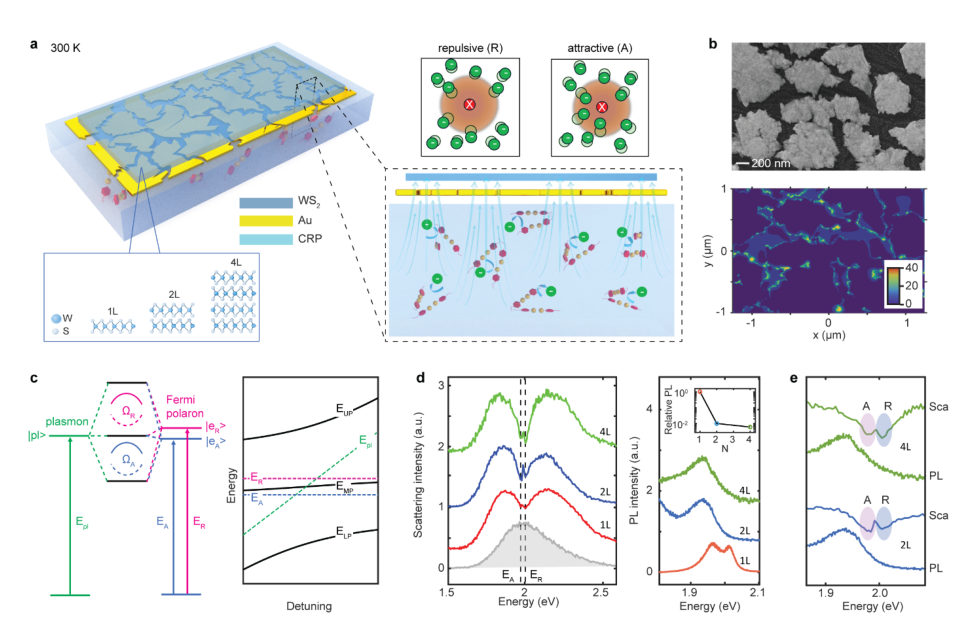
<figcaption class="paper-figure-caption"><b>Fig 1.</b> Figure 1. Branch-resolved scattering readout of Fermi polarons in monolayer and few-</figcaption>
</figure>
<figure class="paper-figure-card">
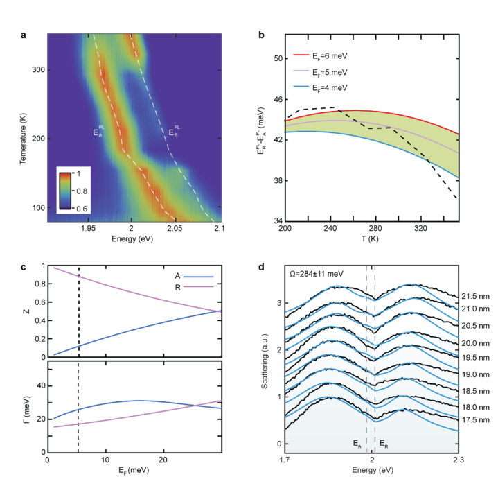
<figcaption class="paper-figure-caption"><b>Fig 2.</b> Figure 2. Benchmarking monolayer WS2 Fermi polarons and validating the metasurface-</figcaption>
</figure>
<figure class="paper-figure-card">
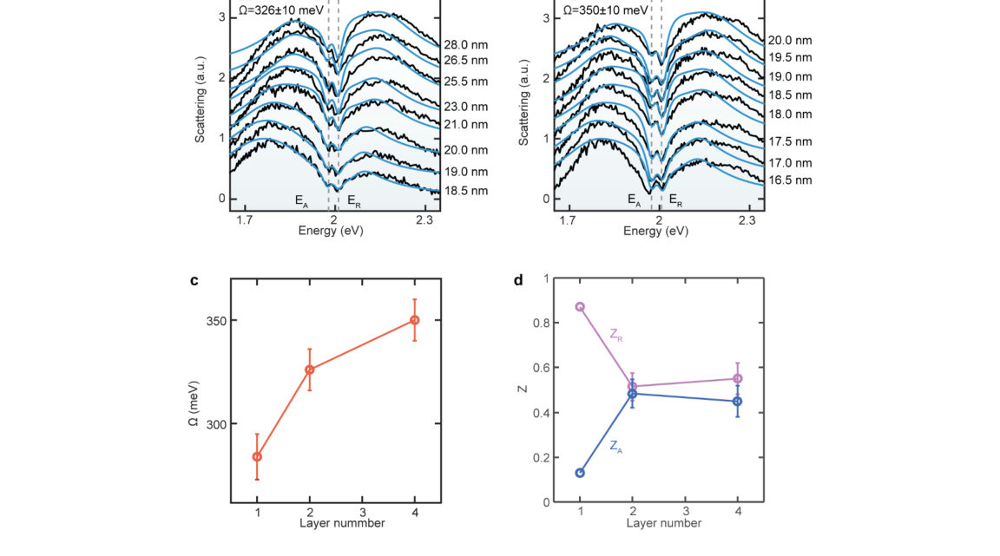
<figcaption class="paper-figure-caption"><b>Fig 3.</b> Figure 3. Fermi polarons in multilayer WS2. Dark-field scattering spectra of 2L (a) and 4L</figcaption>
</figure>
<figure class="paper-figure-card">
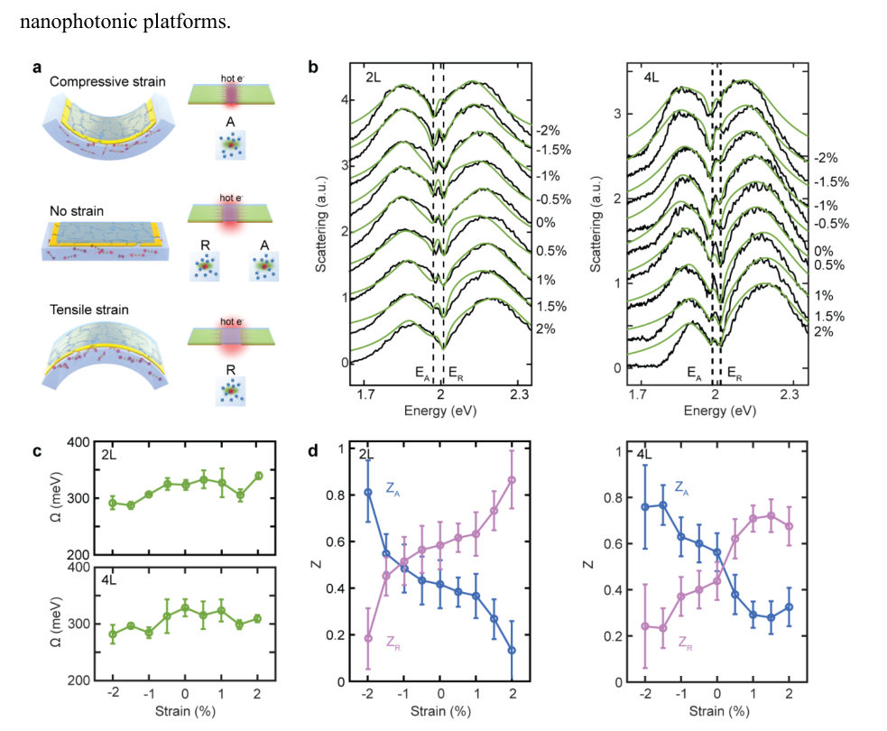
<figcaption class="paper-figure-caption"><b>Fig 4.</b> Figure 4. Strain-programmable redistribution of Fermi polarons. (a) Schematic of uniaxial</figcaption>
</figure>
</div>

<p><strong>Summary.</strong> This research develops a novel platform combining atomically thin semiconductors ($    ext{WS}_2$) with plasmonic metasurfaces to study Fermi polarons at room temperature. By using scattering spectroscopy, the authors achieve quantitative control over polaron branch spectral weights by tuning both the film thickness and applying uniaxial strain. This establishes a powerful tool for manipulating correlated electronic states in 2D materials.</p>
<p><strong>Why it may be interesting.</strong> The work provides an excellent example of using plasmonics to enhance optical contrast for probing subtle many-body physics (FPs) in solid-state systems, bridging fundamental correlated electron theory with device-relevant heterostructures.</p>
<details>
<summary>Detailed structure</summary>
<p><strong>Main problem.</strong> The challenge is extending active, quantitative, branch-resolved probing of Fermi polarons (FPs) from monolayer to stacked geometries in atomically thin semiconductors.</p>
<p><strong>Main result.</strong> The authors successfully demonstrated that integrating $   ext{WS}_2$ with a plasmonic metasurface allows for room-temperature, strain-tunable spectroscopy to resolve and manipulate the attractive and repulsive polaron branches across multiple layers.</p>
<p><strong>Method.</strong> The study combines dark-field scattering spectroscopy measurements with theoretical modeling based on coupled oscillator Hamiltonians (COM) to fit spectral features.</p>
<p><strong>Model / system.</strong> The system involves electron-doped $    ext{WS}_2$ flakes (1L to 4L) placed on a strain-tunable plasmonic metasurface. The physics is modeled via the Fermi polaron quasiparticle interacting with the degenerate Fermi sea and coupled to surface plasmons, forming three hybrid polariton branches.</p>
<p><strong>Key observables.</strong> Polaron branch spectral weights ($w_{AP}, w_{RP}$), Rabi coupling strength ($\Omega$), energy splitting between branches, and temperature dependence of these features.</p>
<p><strong>Important parameters / regimes.</strong> Layer number (1L to 4L), applied uniaxial strain (tensile/compressive), electron doping level, and plasmonic resonance frequency.</p>
<p><strong>Assumptions / limitations.</strong> The analysis often assumes that the optical response in multilayer samples is dominated by the metal-proximal layer, simplifying the full vertical averaging problem. PL measurements are sometimes used as an independent benchmark for intrinsic parameters.</p>
<p><strong>Figures summary.</strong> Figures illustrate the experimental setup (metasurface integration), spectral evolution under strain and thickness changes, and theoretical fitting of coupled oscillator models to extract coupling strengths and spectral weights.</p>
<p><strong>Paper structure.</strong> The paper progresses by first establishing a robust scattering spectroscopy technique that overcomes PL quenching in multilayers. It then systematically investigates how layer number controls the overall polaron response, culminating in demonstrating that uniaxial strain acts as a powerful knob to deterministically redistribute oscillator strength between the attractive and repulsive branches.</p>
</details>
<details>
<summary>Abstract</summary>
<p>The Fermi polaron, arising from interactions between a mobile impurity and a degenerate Fermi sea, is a many-body quasiparticle that provides a sensitive probe of strongly correlated electronic phases in atomically thin semiconductors. In doped transition-metal dichalcogenides, the attractive and repulsive polaron branches are well established in monolayers. However, extending active control and quantitative, branch-resolved probing to stacked geometries has remained elusive because spectral quenching and weak optical contrast restrict access to Fermi polaron signatures. Here, we integrate electron-doped WS$_2$ flakes from monolayer to quadrilayer with a strain-tunable plasmonic metasurface, enabling high-contrast scattering readout at room temperature through coupling between Fermi polaron resonances and surface plasmons. This platform enables quantitative extraction of polaron branch spectral weights and coupling strengths across different layer numbers. We uncover a systematic thickness dependence of the spectral-weight distribution and demonstrate continuous and fully reversible spectral-weight transfer between attractive and repulsive branches in bilayers and quadrilayers, with near-complete transfer achieved in bilayers. By identifying layer number and strain as complementary control parameters for Fermi polarons, our results establish metasurface-enabled scattering spectroscopy as a practical route to resolve and manipulate many-body resonances in stacked van der Waals semiconductors, bridging idealized monolayer polaron physics and device-relevant architectures.</p>
</details>
<p><sub><a href="#top">↑ back to top</a></sub></p>

<p><a id="paper-2606.17623"></a></p>
<h3 id="atomic-scale-sensing-of-photoexcitation-processes-in-electronically-isolated-molecules-via-atomic-force-microscopy"><a href="http://arxiv.org/abs/2606.17623v1">Atomic-scale sensing of photoexcitation processes in electronically isolated molecules via atomic force microscopy</a></h3>
<p><strong>Authors:</strong> Lisanne Sellies, Thomas Buchner, Jinhui Guo, Sonja Bleher, Felix Giselbrecht, Clea Ruth, Andrea Donarini, Jascha Repp, Laerte L. Patera<br>
<strong>Type:</strong> both · <strong>Category:</strong> other · <strong>PDF:</strong> <a href="https://arxiv.org/pdf/2606.17623v1">https://arxiv.org/pdf/2606.17623v1</a><br>
<strong>Analysis basis:</strong> full PDF text, analyzed in chunks
<strong>Topic relevance:</strong> <code>driven-dissipative phase transition</code> <strong>3/5</strong> · <code>methods for driven-dissipative</code> <strong>3/5</strong> · <code>Kondo &amp; dissipative impurity</code> <strong>2/5</strong> · <code>non-equilibrium dynamics</code> <strong>2/5</strong> · <code>quantum measurements</code> <strong>2/5</strong> · <code>quantum optics experiment</code> <strong>2/5</strong> · <code>Keldysh / 2PI / non-Gaussian methods</code> <strong>1/5</strong> · <code>analog quantum simulation</code> <strong>1/5</strong> · <code>correlated / nonlocal dissipation</code> <strong>1/5</strong> · <code>measurement-induced transitions</code> <strong>1/5</strong> · <code>non-equilibrium universality</code> <strong>1/5</strong> · <code>spintronics-quantum-optics interface</code> <strong>1/5</strong></p>
<div class="figure-strip-hint">↔ Scroll figures horizontally</div>
<div class="paper-figures-scroll">
<figure class="paper-figure-card">
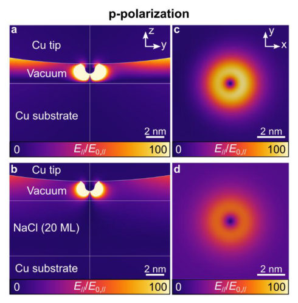
<figcaption class="paper-figure-caption"><b>Fig 1.</b> Fig. 1 | Simulation of the near-field enhancement for p-polarized light. a, b, y-z cross sections of the enhancement for Cu tip-vacuum-Cu substrate and Cu tip-vacuum-NaCl (20 ML)-Cu substrate, respectively. c, d, x-y cross sections 3 Å above the Cu and NaCl surfaces, respectively. The propagation direction of the light is along the x direction. The maximum near-field-enhancement factors are 2300 (a), 1200 (b), 93 (c), and 76 (d). In panels a and b, the signal exceeds the colour-scale maximum and is therefore saturated.</figcaption>
</figure>
<figure class="paper-figure-card">
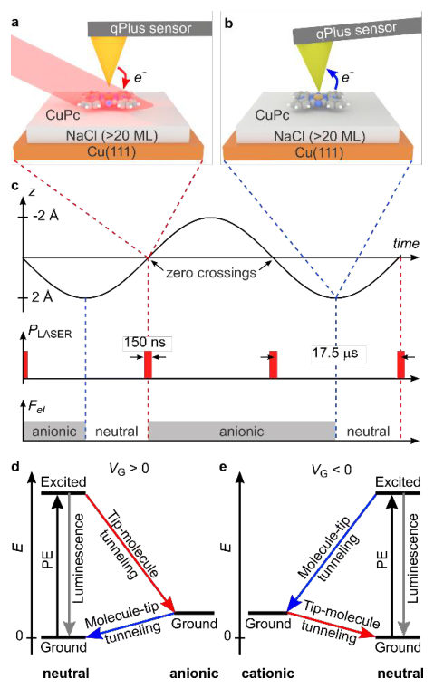
<figcaption class="paper-figure-caption"><b>Fig 2.</b> Fig. 2 | Operating principle of Photoexcited single-charge AFM. Schematic of the PE-AFM measurement scheme showing nanosecond laser pulses phase-locked to the AFM cantilever oscillation. a, Pulses illuminate the tip–sample junction at the cantilever’s zero crossings, exciting the CuPc molecule and inducing electron transfer to the molecule (tip) for suitable positive (negative) values of VG. b, By setting |VG| slightly below the charge bistability threshold, molecular neutralization is steered to occur predominantly near the lower turnaround point of the cantilever oscillation. c, Charge-state- dependent damping mechanism. The asymmetry in molecular charge state between the inward and...</figcaption>
</figure>
<figure class="paper-figure-card">

<figcaption class="paper-figure-caption"><b>Fig 3.</b> Fig. 3a illustrates a schematic representation of the experimental setup, where linearly polarized laser light is focused onto the tip–sample junction (see Methods). Fig. 3b shows the photoexcitation-induced AFM damping (detected as a feedback-induced increased driving amplitude Adrive) signal measured above a CuPc molecule as a function of VG for different laser polarization angles θ. The signal is maximized for p-polarized light (θ = 0°) and vanishes for s- polarized light (θ = 90°), consistent with the polarization dependence of the near-field enhancement (see Fig. 1 and Extended Data Fig. 2a-d). The strong dependence on the light polarization supports the assignment of the observed...</figcaption>
</figure>
<figure class="paper-figure-card">
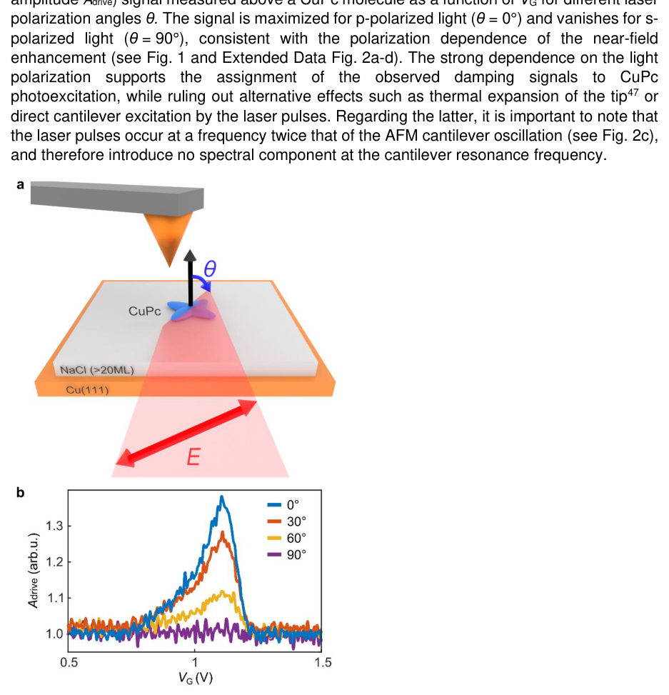
<figcaption class="paper-figure-caption"><b>Fig 4.</b> Fig. 3 | Polarization dependence of the photocurrent signal. a, Schematic indicating the polarization angle θ. b, Polarization dependence of the damping signal as a function of VG.</figcaption>
</figure>
<figure class="paper-figure-card">
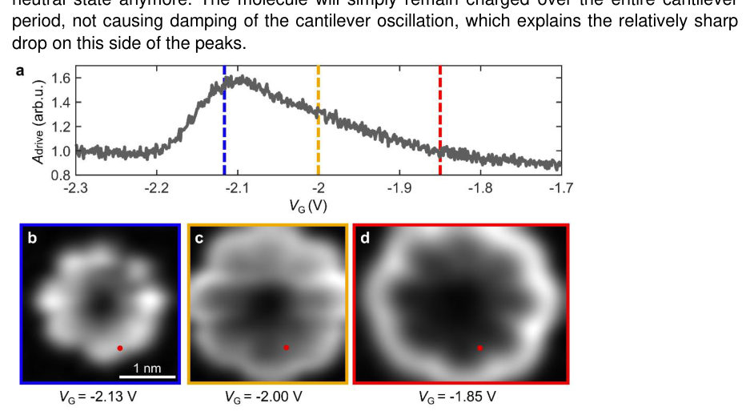
<figcaption class="paper-figure-caption"><b>Fig 5.</b> Fig. 4 | Gate voltage control of photoexcitation detection in CuPc. a, VG-dependent Adrive (indicating damping) for the neutral-to-cationic transition showing an asymmetric lineshape due to the interplay between fixed photoexcitation timing and VG-tunable discharging dynamics. b–d, Constant-height PE- AFM images (Adrive) at VG = –2.13 V (b), –2.00 V (c), and –1.85 V (d). The red dot indicates the position where the spectrum shown in a is taken.</figcaption>
</figure>
</div>

<p><strong>Summary.</strong> The authors introduce Photoexcitation single-charge AFM (PE-AFM) to probe photoexcitation processes in isolated molecules. By synchronizing laser pulses with AFM tip oscillations, they detect charge transfer events related to excited states. This technique provides unprecedented atomic-scale characterization of molecular photophysics, revealing the role of long-lived electronic states.</p>
<p><strong>Why it may be interesting.</strong> This work directly bridges quantum optics/molecular physics with nanoscale characterization. The ability to map out multi-state potential energy surfaces and measure lifetimes <em>in situ</em> at the single-molecule level is highly relevant for understanding open quantum systems dynamics in condensed matter.</p>
<details>
<summary>Detailed structure</summary>
<p><strong>Main problem.</strong> The primary goal is obtaining atomic-scale insights into photoexcitation processes and subsequent charge transfer dynamics within single, electronically isolated molecules.</p>
<p><strong>Main result.</strong> The proposed Photoexcitation single-charge AFM (PE-AFM) technique successfully detects these photocurrents with angstrom spatial resolution, revealing the involvement of long-lived excited states like $ ext{Q}_1$.</p>
<p><strong>Method.</strong> The method combines Atomic Force Microscopy (AFM) with synchronized nanosecond laser pulses to induce photoexcitation and measure subsequent electron tunneling events via changes in cantilever damping.</p>
<p><strong>Model / system.</strong> The system involves single molecules, such as copper phthalocyanine ($  ext{CuPc}$), adsorbed on non-conductive dielectric films ($   ext{NaCl}$) over a metal substrate. Theoretical modeling uses interacting Hamiltonians to describe the multi-state electronic structure (e.g., $    ext{D}_0$, $    ext{Q}_1$) and potential energy surfaces.</p>
<p><strong>Key observables.</strong> Photoexcitation-driven AFM contrast, cantilever damping modulation ($\Delta f$), photoemission current, excited-state spectral features, and transition voltages ($V_G$).</p>
<p><strong>Important parameters / regimes.</strong> Long-lived state lifetime ($    au \approx 11 \, \mu    ext{s}$), spatial resolution ($  ext{\AA}$), laser wavelength ($\lambda = 640   ext{ nm}$), and gate voltage dependence.</p>
<p><strong>Assumptions / limitations.</strong> The technique assumes electronic decoupling of molecules via insulating films, and analysis often relies on modeling the rate-limiting step being dictated by the longest-lived excited state pathway.</p>
<p><strong>Figures summary.</strong> Figures illustrate simulation results for near-field electric field enhancement in dielectric environments, the PE-AFM operating principle showing charge cycling, polarization dependence of the signal, and spatial maps revealing orbital selectivity based on gate voltage.</p>
<p><strong>Paper structure.</strong> The paper progresses from establishing the need for atomic-scale photoexcitation sensing to detailing the PE-AFM methodology (including simulations), demonstrating its capability via spectroscopy and mapping ($ ext{CuPc}$), and finally using advanced fitting techniques to characterize long-lived excited state dynamics.</p>
</details>
<details>
<summary>Abstract</summary>
<p>Atomic-scale insights into light-matter interaction can be obtained using light-assisted scanning probe microscopy techniques. Recently, photoexcited charge carriers have been detected by means of scanning tunnelling microscopy, enabling the study of photo-induced charge transfer with atomic-scale spatial resolution. Here, we propose an approach based on atomic force microscopy (AFM), namely photoexcitation single-charge AFM (PE-AFM), to detect photoexcitation in single molecules adsorbed on non-conductive dielectric films. Synchronizing laser pulses to the oscillation of the tip of an AFM enables the detection of electron tunnelling events that follow photoexcitation. We demonstrate the PE-AFM technique for individual copper phthalocyanine molecules and achieve photoexcitation-driven AFM contrast with ångström spatial resolution. The observed sub-molecular contrast suggests the involvement of a long-lived quadruplet excited state. When combined with the recently developed AFM excited-state spectroscopy including lifetime measurements, PE-AFM enables comprehensive characterization of electronic states involved in photoexcitation and subsequent intersystem crossing, establishing a powerful platform for investigating photophysical processes at the single-molecule level.</p>
</details>
<p><sub><a href="#top">↑ back to top</a></sub></p>

<p><a id="paper-2606.17704"></a></p>
<h3 id="ac-flux-driven-squid-diode-spectroscopy-as-a-probe-of-current-phase-relations"><a href="http://arxiv.org/abs/2606.17704v1">AC-flux-driven SQUID diode spectroscopy as a probe of current-phase relations</a></h3>
<p><strong>Authors:</strong> Yuriy Yerin, Iman Askerzade, Alexey Fedorchenko, Ali Gencer, Oleksandr Dobrovolskiy<br>
<strong>Type:</strong> theory · <strong>Category:</strong> other · <strong>PDF:</strong> <a href="https://arxiv.org/pdf/2606.17704v1">https://arxiv.org/pdf/2606.17704v1</a><br>
<strong>Analysis basis:</strong> full PDF text, analyzed in chunks
<strong>Topic relevance:</strong> <code>Keldysh / 2PI / non-Gaussian methods</code> <strong>3/5</strong> · <code>driven-dissipative phase transition</code> <strong>3/5</strong> · <code>methods for driven-dissipative</code> <strong>3/5</strong> · <code>non-equilibrium dynamics</code> <strong>2/5</strong> · <code>interference shaping light</code> <strong>1/5</strong> · <code>non-equilibrium universality</code> <strong>1/5</strong></p>
<div class="figure-strip-hint">↔ Scroll figures horizontally</div>
<div class="paper-figures-scroll">
<figure class="paper-figure-card">
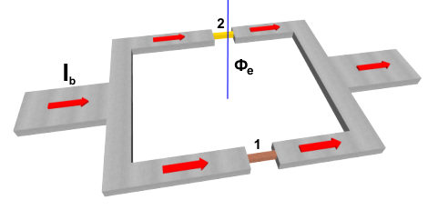
<figcaption class="paper-figure-caption"><b>Fig 1.</b> FIG. 1. Schematic of the asymmetric dc SQUID geome- try. The device consists of two Josephson junctions (1 and 2) threaded by an external magnetic flux Φe = Φdc + Φac cosωt, with dc and ac flux components and biased by the dc current Ib. Junction 1 is a conventional junction with a purely sinusoidal CPR, while junction 2 may support subharmonic and second- harmonic contributions, as described by Eq. (7).</figcaption>
</figure>
<figure class="paper-figure-card">
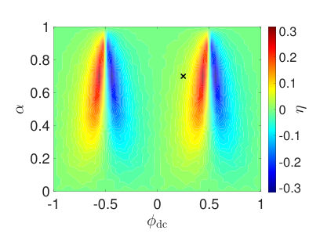
<figcaption class="paper-figure-caption"><b>Fig 2.</b> FIG. 2. Diode efficiency η(φdc,α) of a dc SQUID with two purely sinusoidal Josephson junctions for βc = 1 and βL = 0.15 in the static regime (φac = 0). The cross marks the working point (φdc = 0.25, α = 0.7) used in the remainder of this work.</figcaption>
</figure>
<figure class="paper-figure-card">
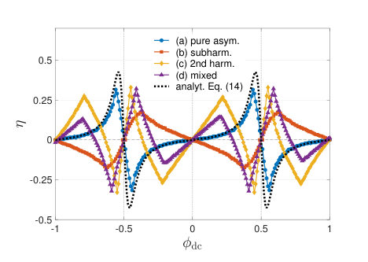
<figcaption class="paper-figure-caption"><b>Fig 3.</b> FIG. 3. Static diode efficiency η(φdc) at φac = 0, βc = 1, βL = 0.15, and α = 0.7, for the four CPR cases defined by Eq. (7), as indicated in the legend. The dotted black curve shows the analytical prediction from Eq. (14). Vertical dotted lines mark the time-reversal symmetric flux values φdc = 0 and φdc = ±1/2.</figcaption>
</figure>
<figure class="paper-figure-card">
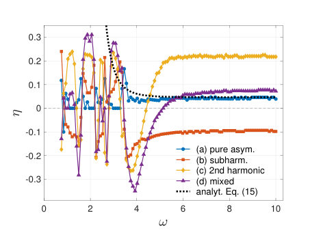
<figcaption class="paper-figure-caption"><b>Fig 4.</b> FIG. 4. Frequency dependence of the diode efficiency η(ω) at fixed φac = 1.5, φdc = 0.25, βc = 1, βL = 0.15, and α = 0.7, for the four CPR cases, as indicated. The dotted black curve shows the analytical prediction from Eq. (15).</figcaption>
</figure>
<figure class="paper-figure-card">
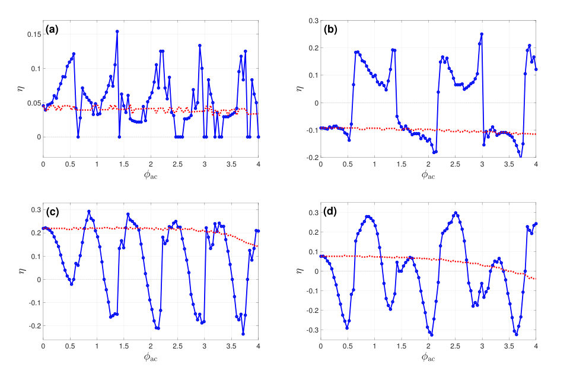
<figcaption class="paper-figure-caption"><b>Fig 5.</b> FIG. 5. Flux-drive-amplitude dependence of the diode efficiency η(φac) at φdc = 0.25, βc = 1, βL = 0.15, and α = 0.7 for four CPR cases: (a) pure amplitude asymmetry, (b) subharmonic only, (c) second-harmonic only, and (d) mixed harmonics. Each panel shows two curves corresponding to ω = 1 (solid blue with markers) and the adiabatic limit ω = 7.5 (dotted red).</figcaption>
</figure>
</div>

<p><strong>Summary.</strong> This work proposes using AC magnetic-flux-driven SQUID diode spectroscopy as a novel diagnostic tool for mapping the Current-Phase Relation (CPR) in unconventional superconductors. By analyzing the resulting 2D phase diagram of the diode efficiency, researchers can distinguish between different CPR harmonics ($\sin\phi$, $\sin(\phi/2)$, $\sin(2\phi)$) based on characteristic Bessel function patterns. This method offers a robust way to probe exotic superconducting states like those found in topological or multiband materials.</p>
<p><strong>Why it may be interesting.</strong> The technique provides a powerful, non-invasive transport measurement to probe microscopic quantum details of superconducting order parameters (like fractional or higher harmonics) that are otherwise difficult to measure directly.</p>
<details>
<summary>Detailed structure</summary>
<p><strong>Main problem.</strong> The primary challenge is unambiguously extracting individual Current-Phase Relation (CPR) harmonics from the CPR spectrum, as different components yield nearly identical static interference patterns obscured by device asymmetries and dynamics.</p>
<p><strong>Main result.</strong> AC magnetic-flux-driven SQUID diode spectroscopy provides a high-resolution diagnostic tool, revealing distinct fingerprints of various CPR harmonics ($\sin\phi$, $\sin(\phi/2)$, $\sin(2\phi)$) through characteristic Bessel function dressings in the 2D phase diagram $\eta(\varphi_{ac}, \omega)$.</p>
<p><strong>Method.</strong> The authors use complementary reductions of fast-driven dynamics, including Kapitza-type perturbation theory and Jacobi–Anger averaging, to analyze the diode efficiency $\eta$ as a function of AC flux amplitude ($\varphi_{ac}$) and frequency ($\omega$).</p>
<p><strong>Model / system.</strong> The system is an asymmetric DC SQUID with unequal junction critical currents. The model incorporates Josephson junctions whose CPRs can contain higher-order or fractional harmonics, such as $\sin(\phi/2)$ (4$\pi$-periodic) and $\sin(2\phi)$ ($\pi$-periodic).</p>
<p><strong>Key observables.</strong> Diode efficiency $\eta(\varphi_{ac}, \omega)$, which exhibits characteristic nodal line patterns governed by Bessel functions ($J_0(\xi_0)$, $J_0(\xi_0/2)$, $J_0(2\xi_0)$).</p>
<p><strong>Important parameters / regimes.</strong> AC flux amplitude ($\varphi_{ac}$), driving frequency ($\omega$), and the damping regime (overdamped to underdamped).</p>
<p><strong>Assumptions / limitations.</strong> The analysis relies on approximations like assuming $eta_L \ll 1$ for Jacobi-Anger reduction, and that the system dynamics can be mapped onto an effective CPR structure.</p>
<p><strong>Figures summary.</strong> Figures illustrate static ($\eta(\varphi_{dc})$), frequency ($\eta(\omega)$), and full 2D phase diagrams ($\eta(\varphi_{ac}, \omega)$) showing distinct arc patterns corresponding to different underlying CPR harmonics.</p>
<p><strong>Paper structure.</strong> The paper systematically develops the theoretical framework by first establishing the SQUID model, then applying fast-averaging techniques (Jacobi-Anger), and finally mapping the resulting effective CPR components onto measurable signatures in the 2D phase diagram $\eta(\varphi_{ac}, \omega)$ for various harmonic content.</p>
</details>
<details>
<summary>Abstract</summary>
<p>The current-phase relation (CPR) of a Josephson junction encodes microscopic information on superconducting states through higher-order and fractional harmonics. However, their unambiguous extraction is challenging, as different CPR components produce nearly identical static interference patterns that are further obscured by device asymmetries, damping, and dynamical effects. Here, we propose probing individual CPR harmonics via the ac magnetic-flux-driven diode effect in asymmetric dc SQUIDs with unequal junction critical currents. Using two complementary reductions of the fast-driven dynamics -- a Kapitza-type perturbation theory for the conventional junction and a Jacobi--Anger averaging for a general CPR -- we show that ac flux modulation dresses each harmonic with a distinct Bessel function, yielding characteristic signatures in the diode efficiency $η(φ_{\rm ac},ω)$ as a function of ac flux amplitude $φ_{\rm ac}$ and frequency $ω$. We verify and extend these predictions by numerical solutions of the coupled dynamical equations for CPRs containing $\sin\varphi$, $\sin(\varphi/2)$, and $\sin 2\varphi$ terms ($\varphi$: superconducting phase difference), and construct phase diagrams of $η(φ_{\rm ac},ω)$. Distinct CPR components are revealed to produce characteristic weak, sparse, dense, or intermodulated arc patterns that remain robust in both overdamped and underdamped regimes. This suggests ac-flux-driven SQUID diode spectroscopy as a probe of current-phase relations in topological materials, multiband systems, and other unconventional superconductors.</p>
</details>
<p><sub><a href="#top">↑ back to top</a></sub></p>

<p><a id="paper-2606.18076"></a></p>
<h3 id="energy-localization-in-damped-nonlinear-disordered-metastructures-under-superharmonic-resonance"><a href="http://arxiv.org/abs/2606.18076v1">Energy localization in damped nonlinear disordered metastructures under superharmonic resonance</a></h3>
<p><strong>Authors:</strong> Lucas José Dantas Alcântara, Arthur Silva Barbosa, Rafael da Silva Raqueti, Najib Kacem, Leopoldo Pisanelli Rodrigues de Oliveira, Noureddine Bouhaddi<br>
<strong>Type:</strong> theory · <strong>Category:</strong> disordered systems and neural networks · <strong>PDF:</strong> <a href="https://arxiv.org/pdf/2606.18076v1">https://arxiv.org/pdf/2606.18076v1</a><br>
<strong>Analysis basis:</strong> full PDF text, analyzed in chunks
<strong>Topic relevance:</strong> <code>Frenkel-Kontorova</code> <strong>3/5</strong> · <code>methods for driven-dissipative</code> <strong>3/5</strong> · <code>driven-dissipative phase transition</code> <strong>2/5</strong> · <code>non-equilibrium dynamics</code> <strong>2/5</strong> · <code>Keldysh / 2PI / non-Gaussian methods</code> <strong>1/5</strong> · <code>correlated / nonlocal dissipation</code> <strong>1/5</strong> · <code>non-equilibrium universality</code> <strong>1/5</strong></p>
<div class="figure-strip-hint">↔ Scroll figures horizontally</div>
<div class="paper-figures-scroll">
<figure class="paper-figure-card">
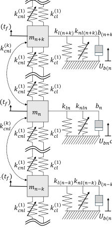
<figcaption class="paper-figure-caption"><b>Fig 1.</b> Fig. 1 Equivalent lumped-parameter model of the metas- tructure. The system consists of a chain of oscillators coupled through linear stiffnesses kcl and nonlinear stiff- nesses kcnl, with coupling interactions extending up to the α-th neighbor and the superscript (k) denotes the coupling order. Each unit cell is defined by the mass m, linear stiff- ness kl, nonlinear stiffness knl, damping coefficient b, and base excitation of amplitude Ub, indexed by n to identify each oscillator. The excitation is tuned around third order superharmonic resonance of the primary mode.</figcaption>
</figure>
<figure class="paper-figure-card">
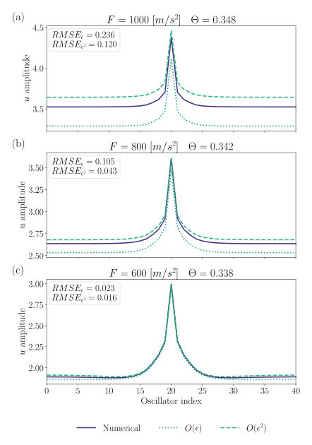
<figcaption class="paper-figure-caption"><b>Fig 2.</b> Fig. 2 Comparison between analytical responses obtained using the method of multiple scales with a single time scale and with two time scales, and the numerical solution obtained from the integration of Eq. (3) for the harden- ing case (± = 1). Panels a)–c) present the comparison for different excitation amplitudes. Numerical validation con- siders all oscillators initially at rest. Analytical solutions are obtained over 100 periods using the DOP853 method with tolerances rtol = 10−6 and atol = 10−8. Numerical integration is performed using the LSODA method with rtol = 10−6 and atol = 10−8 over 500 cycles, with the first 200 discarded as transient and 1000 points adopted per cycle. The...</figcaption>
</figure>
<figure class="paper-figure-card">
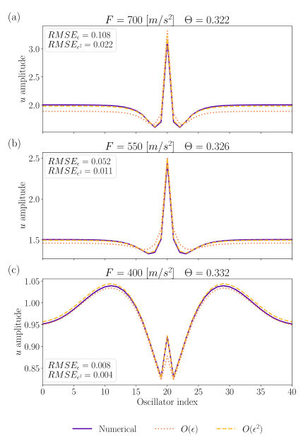
<figcaption class="paper-figure-caption"><b>Fig 3.</b> Fig. 3 Comparison between analytical responses obtained using the method of multiple scales with a single time scale and with two time scales, and the numerical solution obtained from the integration of Eq. (3) for the softening case (± = −1). Panels a)–c) present the comparison for different excitation amplitudes. Numerical validation con- siders all oscillators initially at rest. Analytical solutions are obtained over 100 periods using the DOP853 method with tolerances rtol = 10−6 and atol = 10−8. Numerical integration is performed using the LSODA method with rtol = 10−6 and atol = 10−8 over 500 cycles, with the first 200 discarded as transient and 1000 points adopted per cycle. The...</figcaption>
</figure>
<figure class="paper-figure-card">
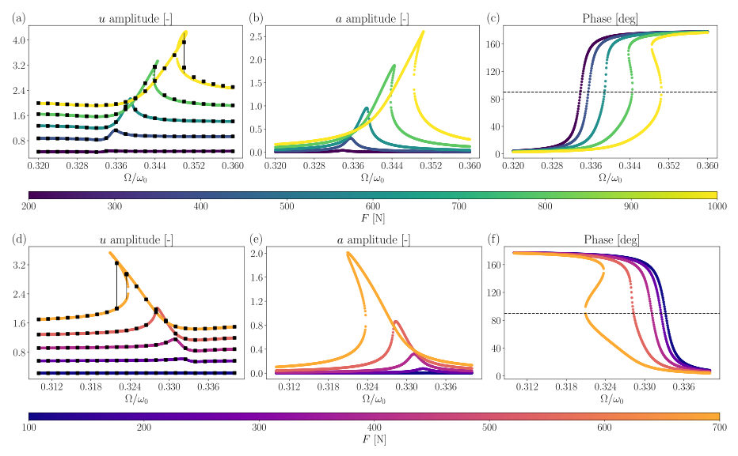
<figcaption class="paper-figure-caption"><b>Fig 4.</b> Fig. 4 Simulation of the 1-DOF system illustrating the limitations of an isolated amplitude analysis. Panels a)–c) corre- spond to the hardening case, while panels d)–f) represent the softening condition. The three columns show the amplitude of un, the amplitude an, and the phase γn, respectively. Numerical validation is performed by selecting points on the un ana- lytical curve as initial conditions for the numerical integration of Eq. (3), producing the black squares. Differences between squares and analytical predictions indicate the limits of the multiple-scales approximation. Integration is performed with the LSODA method using rtol = 10−6 and atol = 10−8, simulating 500 cycles (first...</figcaption>
</figure>
<figure class="paper-figure-card">
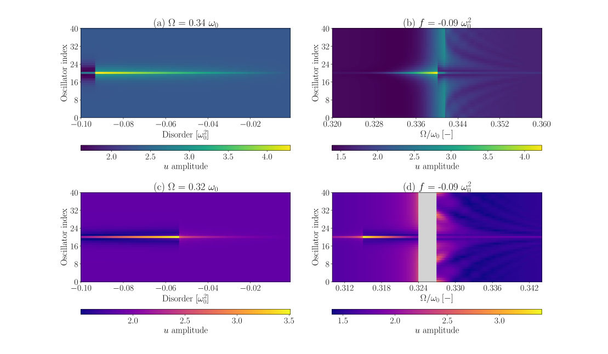
<figcaption class="paper-figure-caption"><b>Fig 5.</b> Fig. 5 Numerical sweeps of soliton nucleation for hardening (a–b) and softening (c–d) regimes. Panels (a,c): fixed excitation frequency with varying disorder; (b,d): fixed disorder with varying frequency. Simulations use the DOP853 method (rtol = 10−6, atol = 10−8) over 100 periods. Parameters: ζ = 0.3/100, ω0 = 100 Hz, β = 2.5 × 109[N/(kg · m3)], e = 0.01, and F = 700m/s2. Gray region (c–d): no steady-state convergence. Absence of nonlinear coupling. Linear coupling up to third order (α = 3), with C(1) l = 2.5%, ω2 0, C(2) l = C(1) l /4, and C(3) l = C(1) l /9. Periodic parameters, except for the introduced disorder. Numerical continuation imposed on the frequency domain.</figcaption>
</figure>
</div>

<p><strong>Summary.</strong> This paper investigates how energy localizes into solitons within complex, damped, nonlinear metamaterials subjected to disorder and driven at superharmonic frequencies. Using advanced perturbation methods like the method of multiple scales, the authors derive governing equations that reveal a crucial difference in phase dynamics compared to simpler resonances. The findings confirm that controlled disorder can induce soliton formation, supporting applications for vibration control strategies.</p>
<p><strong>Why it may be interesting.</strong> The study of energy localization and soliton formation in disordered nonlinear lattices is a core topic bridging condensed matter physics (disorder effects) and nonlinear dynamics. The extension to superharmonic resonances provides new insights into wave propagation control mechanisms beyond standard primary resonance studies.</p>
<details>
<summary>Detailed structure</summary>
<p><strong>Main problem.</strong> The paper develops a framework to study energy localization, specifically soliton dynamics, in nonlinear disordered metastructures operating under superharmonic resonance conditions.</p>
<p><strong>Main result.</strong> It demonstrates that the phase plays a distinct role in superharmonic resonances compared to primary resonances, and shows that soliton nucleation is strongly dependent on disorder reducing the natural frequency.</p>
<p><strong>Method.</strong> The analysis heavily relies on the Method of Multiple Scales applied to derive governing equations for soliton dynamics at second order, leading to novel restitution equations.</p>
<p><strong>Model / system.</strong> The system modeled is a metastructure composed of coupled Duffing oscillators with linear and nonlinear coupling terms, incorporating disorder-induced periodicity breaking. The analysis focuses on the steady-state regime under superharmonic excitation.</p>
<p><strong>Key observables.</strong> Soliton nucleation rate, amplitude profiles ($u_n$ vs $a_n$), convergence criteria ($\max |d A_n/dt| < 10^{-7}$), and Relative Standard Deviation (RSD) quantifying robustness against uncertainty.</p>
<p><strong>Important parameters / regimes.</strong> Superharmonic excitation frequency ($\Theta$), disorder strength ($\delta
ho$), coupling orders ($\alpha=3$), and the number of degrees of freedom ($N$).</p>
<p><strong>Assumptions / limitations.</strong> The analysis assumes strong excitation, employs perturbation expansions up to $\epsilon^2$, and makes several approximations regarding neglecting certain couplings or non-resonant terms.</p>
<p><strong>Figures summary.</strong> Figures illustrate space-time evolution showing convergence criteria satisfaction for localized states versus non-convergent periodic/chaotic responses based on the excitation frequency. Sweeps show soliton nucleation rates dependence on disorder strength and excitation frequency.</p>
<p><strong>Paper structure.</strong> The paper progresses from establishing the physical model and applying multiple scales to derive governing equations (including novel $\epsilon^2$ terms). It then analyzes the dynamics by comparing analytical solutions with numerical simulations, focusing on the distinct role of phase in superharmonic resonance compared to primary resonance. Finally, it assesses robustness against disorder uncertainty.</p>
</details>
<details>
<summary>Abstract</summary>
<p>This paper proposes a framework for energy localization in nonlinear oscillator chains operating in non-fundamental resonance, with emphasis on superharmonic regimes. The system is modeled as a metastructure composed of Duffing oscillators with both linear and nonlinear coupling, incorporating disorder-induced periodicity breaking. Under the assumption of strong excitation, the method of multiple scales is employed to derive the governing equations for soliton dynamics. At first-order perturbation, the classical form of the Nonlinear Schrödinger Equation emerges, whereas second-order analysis yields a previously unreported equation arising from the restitution of time scales. Analytical and numerical results demonstrate the nucleation of solitons in both hardening and softening regimes, based on two approaches: direct time-domain simulations from initially motionless states and numerical continuation in the frequency domain. A key finding is the distinct role of phase in superharmonic resonances compared to the primary resonance; specifically, the coexistence of multiple frequency components in the steady-state response precludes interpreting the soliton directly as a displacement envelope. Instead, the resulting secular terms captures the soliton associated with the resonant contribution, while transient components remain present under superharmonic excitation. Furthermore, robustness against disorder uncertainty is assessed by determining the tolerance levels that preserve the phenomenon. These results support the development of vibration control strategies aimed at mitigating the increase in resonant frequencies associated with the geometric downscaling of mechanical systems.</p>
</details>
<p><sub><a href="#top">↑ back to top</a></sub></p>

<p><a id="paper-2606.18224"></a></p>
<h3 id="coherent-effects-in-quantum-transport-models-and-their-classical-counterparts"><a href="http://arxiv.org/abs/2606.18224v1">Coherent effects in quantum transport models and their classical counterparts</a></h3>
<p><strong>Authors:</strong> N. S. Maslova, V. N. Mantsevich, I. M. Sokolov, P. I. Arseyev<br>
<strong>Type:</strong> theory · <strong>Category:</strong> other · <strong>PDF:</strong> <a href="https://arxiv.org/pdf/2606.18224v1">https://arxiv.org/pdf/2606.18224v1</a><br>
<strong>Analysis basis:</strong> full PDF text, analyzed in chunks
<strong>Topic relevance:</strong> <code>non-equilibrium dynamics</code> <strong>3/5</strong> · <code>driven-dissipative phase transition</code> <strong>2/5</strong> · <code>non-equilibrium universality</code> <strong>2/5</strong> · <code>Frenkel-Kontorova</code> <strong>1/5</strong> · <code>Keldysh / 2PI / non-Gaussian methods</code> <strong>1/5</strong> · <code>analog quantum simulation</code> <strong>1/5</strong> · <code>correlated / nonlocal dissipation</code> <strong>1/5</strong> · <code>methods for driven-dissipative</code> <strong>1/5</strong></p>
<div class="figure-strip-hint">↔ Scroll figures horizontally</div>
<div class="paper-figures-scroll">
<figure class="paper-figure-card">
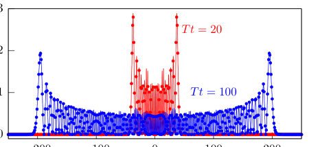
<figcaption class="paper-figure-caption"><b>Fig 1.</b> FIG. 1. Quasi-particle probability density function for a tight- binding chain with regular hopping amplitude with different values of parameter Tt, see text for details. The dots cor- respond to the physically realizable whole values of j, while thin solid lines serving as a guide to the eye are obtained by evaluation of the sum, here given by Eq. (8), for fractional values of j. The same notation is used in Figs. 3, 4, and 5.</figcaption>
</figure>
<figure class="paper-figure-card">
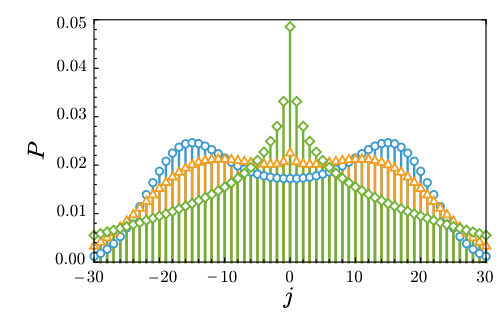
<figcaption class="paper-figure-caption"><b>Fig 2.</b> FIG. 2. The probability to find a particles at a site j of a chain for µ = 20 and different values of σ. One readily infers the transition from a bimodal shape for σ small, σ = 5 (circles) to a monomodal shape for sigma large (σ = 20, diamonds). The intermediate domain (here shown for σ = 7.5, triangles) corresponds to trimodal shapes.</figcaption>
</figure>
<figure class="paper-figure-card">
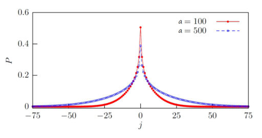
<figcaption class="paper-figure-caption"><b>Fig 3.</b> FIG. 3. Quasi-particle probability density function for clas- sical random hopping amplitude uniform for all pairs of sites for different values of parameter a given by Eq.(27).</figcaption>
</figure>
<figure class="paper-figure-card">
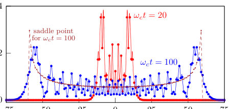
<figcaption class="paper-figure-caption"><b>Fig 4.</b> FIG. 4. Quasi-particle probability density function for differ- ent values of ωct and δ = 0. The quasi-particles are excited at site j = 0. The value of α is taken for α = 0.3.</figcaption>
</figure>
<figure class="paper-figure-card">
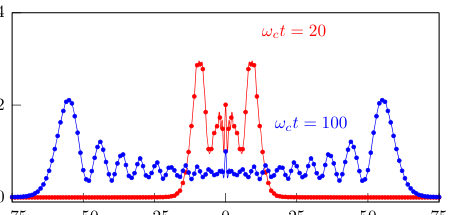
<figcaption class="paper-figure-caption"><b>Fig 5.</b> FIG. 5. Quasi-particle probability density function for ini- tially excited quasi particles at site j = 0 and for different values of parameter ωct and α = 0.3. The uniform phase δ is distributes as P(δ) = 1/2π.</figcaption>
</figure>
</div>

<p><strong>Summary.</strong> The paper investigates quasiparticle transport in various quantum chain models, demonstrating that the time evolution of the probability distribution function mimics classical random walk behaviors. By analyzing phonon-assisted hopping and disordered chains, the authors establish a direct quantum analogue to anomalous diffusion processes, particularly those exhibiting ballistic or U-shaped spreading.</p>
<p><strong>Why it may be interesting.</strong> This work bridges coherent quantum dynamics with classical anomalous diffusion processes, providing a microscopic quantum origin for phenomena like Lévy walks observed in condensed matter systems.</p>
<details>
<summary>Detailed structure</summary>
<p><strong>Main problem.</strong> The study analyzes how quasiparticle transport properties behave in quantum systems, specifically comparing coherent quantum dynamics to classical stochastic models like Lévy walks.</p>
<p><strong>Main result.</strong> Quantum probability distributions exhibit behavior analogous to classical Continuous-Time Random Walk (CTRW) models, showing ballistic spreading or U-shaped profiles due to underlying coherence mechanisms.</p>
<p><strong>Method.</strong> The analysis involves solving time evolution equations for the probability distribution function (PDF) using tight-binding Hamiltonians and applying advanced mathematical techniques like integral transforms and saddle-point approximations.</p>
<p><strong>Model / system.</strong> The models include simple tight-binding chains, heterogeneous ensembles of chains with random hopping amplitudes, and phonon-assisted hopping mechanisms in 2D semiconductor systems (like TMDs).</p>
<p><strong>Key observables.</strong> Time-dependent probability distribution function (PDF) $P_j(t)$, mean squared displacement $\langle x^2 
angle$, and the shape transition of the PDF (bimodal to monomodal).</p>
<p><strong>Important parameters / regimes.</strong> Hopping amplitude ($T$), phonon coupling strength ($\omega_{ct}$), disorder parameters ($\mu, \sigma$), and time $t$.</p>
<p><strong>Assumptions / limitations.</strong> The analysis relies on approximations such as the continuum limit, saddle-point approximation for integrals, and assuming specific forms for random phases or hopping amplitudes.</p>
<p><strong>Figures summary.</strong> Figures illustrate the quasi-particle PDF ($P_j$) showing transitions from bimodal to monomodal shapes in heterogeneous ensembles, and demonstrate U-shaped/ballistic profiles in phonon-assisted hopping models.</p>
<p><strong>Paper structure.</strong> The paper systematically analyzes transport using several quantum models: simple tight-binding, heterogeneous ensembles (varying disorder), random time-dependent hopping, and finally the detailed analysis of phonon-assisted hopping mechanisms.</p>
</details>
<details>
<summary>Abstract</summary>
<p>We analyze the transport properties of quasiparticles locally excited at an initial time moment in several exactly solvable quantum models. It is revealed that, in the investigated quantum systems, the time-dependent probability distribution function (PDF) exhibits behavior similar to that of classical continuous-time random walk (CTRW) models, such as Lévy walks or diffusing diffusivity.</p>
</details>
<p><sub><a href="#top">↑ back to top</a></sub></p>

<p><a id="paper-2606.17865"></a></p>
<h3 id="chirality-induced-spin-selectivity-without-intrinsic-spin-orbit-coupling-role-of-current-induced-molecular-orbital-moment"><a href="http://arxiv.org/abs/2606.17865v1">Chirality-induced spin selectivity without intrinsic spin-orbit coupling: Role of current-induced molecular orbital moment</a></h3>
<p><strong>Authors:</strong> Sumit Ghosh, Angela Wittmann, Frank Matthes, Daniel E. Bürgler<br>
<strong>Type:</strong> theory · <strong>Category:</strong> other · <strong>PDF:</strong> <a href="https://arxiv.org/pdf/2606.17865v1">https://arxiv.org/pdf/2606.17865v1</a><br>
<strong>Analysis basis:</strong> full PDF text, analyzed in chunks
<strong>Topic relevance:</strong> <code>Keldysh / 2PI / non-Gaussian methods</code> <strong>3/5</strong> · <code>spintronics-quantum-optics interface</code> <strong>3/5</strong> · <code>methods for driven-dissipative</code> <strong>2/5</strong> · <code>exotic spin models in light-matter</code> <strong>1/5</strong> · <code>non-equilibrium dynamics</code> <strong>1/5</strong></p>
<div class="figure-strip-hint">↔ Scroll figures horizontally</div>
<div class="paper-figures-scroll">
<figure class="paper-figure-card">
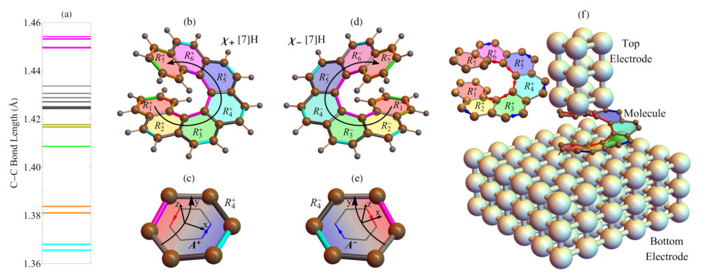
<figcaption class="paper-figure-caption"><b>Fig 1.</b> FIG. 1. Variation of the bond lengths and corresponding gauge fields in the right- and left-handed [7]H enantiomer and schematic device configuration. (a) Different bond lengths and their representative colors. (b) Right-handed (χ+) [7]H enantiomer where R1-R7 show the constituent C six-rings. (c) Variation of bond length in the 4th C six-ring (R+ 4 ), where x, y, and z span the local Cartesian coordinate system. The gradient of the bond length is shown in color in the plane of the C six-ring. Blue and red arrows show the direction of the corresponding gauge field along the outer and inner edge. Corresponding configuration for (d) the left-handed (χ−) [7]H enantiomer and (e) its 4th C...</figcaption>
</figure>
<figure class="paper-figure-card">
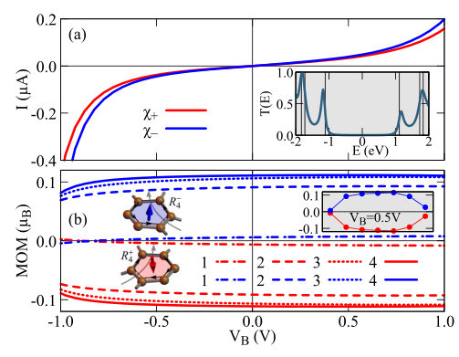
<figcaption class="paper-figure-caption"><b>Fig 2.</b> FIG. 2. I-V characteristics and induced MOM in χ+ and χ− [7]H molecules when electrons with spin polarization along +ˆz are injected. The Fermi level (EF ) is at 0.5 eV. (a) I-V curves of χ+ (red) and χ−(blue) molecules (Fig. 1b,d). Inset shows their degenerate transmission coefficient where the vertical black lines denote the eigenvalues of isolated molecule. (b) MOM due to the ring currents in the molecular rings 1-4 for χ+ (red) and χ−(blue) [7]H molecules. Inset shows the MOM for all seven rings at VB = 0.5 V. Schematics on the left show the bond currents (black arrows, also see Eq. 2) and the resulting MOM (large blue and red arrows) for rings R+ 4 and R− 4 at VB =0.5 V. Large gray...</figcaption>
</figure>
<figure class="paper-figure-card">
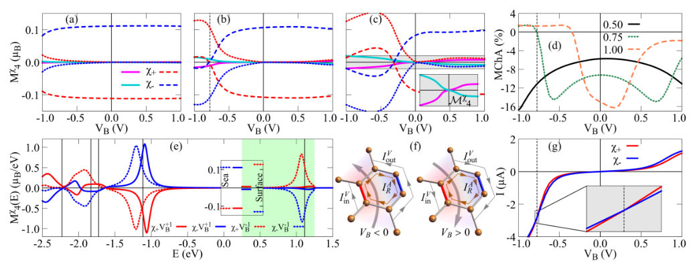
<figcaption class="paper-figure-caption"><b>Fig 3.</b> FIG. 3. Different contributions to the MOM and their impact on MChA and I-V curves. (a-c) Total MOM (dashed) and the Fermi surface contribution (dotted) of the 4th six-ring (M χ 4 ) for EF at (a) 0.5 eV, (b) 0.75 eV and (c) 1.0 eV, where red and blue lines represent the χ+ and χ−enantiomers. Magenta and cyan lines show the antisymmetric component Mχ 4 (see Eq. 4). Inset of (c) enlarges the crossing of Mχ 4 at the Fermi energy. (d) shows the MChA for EF at 0.5 eV (black), 0.75 eV (green dotted), and 1.0 eV (orange dashed). The vertical black dashed line indicates the zero crossing of MChA for EF = 0.75 eV, which is also marked in (b) and (g). (e) shows the distribution of total M χ 4 for VB...</figcaption>
</figure>
<figure class="paper-figure-card">
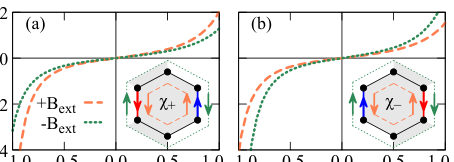
<figcaption class="paper-figure-caption"><b>Fig 4.</b> FIG. 4. I-V curves under opposite external magnetic field. Here we use | H AB · dl| = 0.1| H Aχ · dl|. (a) and (b) show the I-V curves for χ+ and χ−enantiomers, where orange dashed and green dotted lines correspond to positive (+Bext) and negative (−Bext) external magnetic field. Insets show the orientation of the gauge field in a six-ring, where orange and green arrows indicate the gauge field due to ±Bext respec- tively, and red and blue arrows denote the direction of Aχ ij for (a) χ+ and (b) χ−enantiomers (see Fig. 1c,e).</figcaption>
</figure>
<figure class="paper-figure-card">
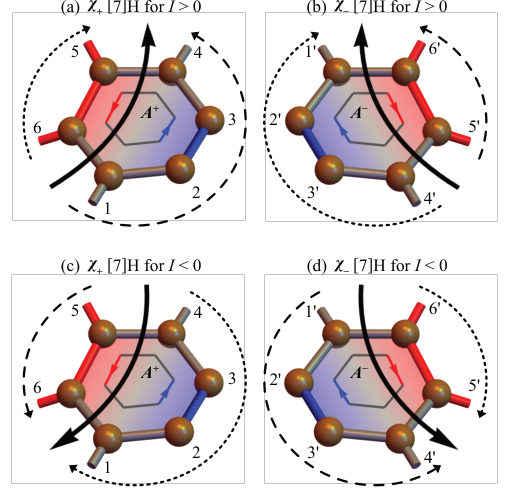
<figcaption class="paper-figure-caption"><b>Fig 5.</b> FIG. 5. Gauge field and current flow in the 4th C six-ring of both [7]H enantiomers for positive (a,b) and negative (c,d) current. Solid black arrows indicate the electron motion when a positive (a,b) or negative (c,d) current is flowing through the molecule. Dashed and dotted arrows represent ccw and cw current components, respectively. The C atoms are numbered ccw from 1 to 6 and from 1’ to 6’, respectively.</figcaption>
</figure>
</div>

<p><strong>Summary.</strong> The paper proposes that Chirality-Induced Spin Selectivity (CISS) in chiral molecules originates from a current-induced Molecular Orbital Moment (MOM). This MOM arises from an effective gauge field associated with structural distortions, allowing the effect to be explained without invoking intrinsic spin-orbit coupling. The theory successfully predicts characteristic asymmetries in transport measurements like MChA.</p>
<p><strong>Why it may be interesting.</strong> This work provides a detailed theoretical mechanism for spin selectivity based purely on geometric and electronic structure effects (gauge fields/orbital moments), which is highly relevant to molecular spintronics and quantum transport phenomena studied in AMO physics.</p>
<details>
<summary>Detailed structure</summary>
<p><strong>Main problem.</strong> The paper addresses the unresolved microscopic origin of Chirality-Induced Spin Selectivity (CISS) in helical molecules, proposing a mechanism that accounts for intrinsic molecular contributions.</p>
<p><strong>Main result.</strong> CISS can arise from a current-induced Molecular Orbital Moment (MOM), whose direction is governed by a gauge field linked to the molecule's structural handedness, all without requiring intrinsic spin-orbit coupling.</p>
<p><strong>Method.</strong> The theory models transport using a tight-binding Hamiltonian incorporating a Peierls phase derived from bond length variations, and calculates observables via Green's functions.</p>
<p><strong>Model / system.</strong> The system uses chiral molecules like heptahelicene ($\chi^{\pm}[7]	ext{H}$), modeled by a tight-binding Hamiltonian. The mechanism centers on the generation of an emergent MOM due to circulating charge currents in molecular loops.</p>
<p><strong>Key observables.</strong> Magnetochiral conductance asymmetry (MChA) and CISS magnetoresistance, I-V characteristics for enantiomers ($\chi^+$ vs $\chi^-$), and the Molecular Orbital Moment (MOM).</p>
<p><strong>Important parameters / regimes.</strong> Bias voltage ($V_B$), external magnetic field ($B_{	ext{ext}}$), coupling parameters ($t_B, t_T$), and the gauge flux ($\Phi$).</p>
<p><strong>Assumptions / limitations.</strong> The theory builds upon incorporating a distortion-induced gauge field to satisfy Onsager-Casimir reciprocity relations and explain zero-bias crossings.</p>
<p><strong>Figures summary.</strong> Figures illustrate I-V curves and MOM in enantiomers under bias/field, showing the influence of structural gauge fields ($\mathbf{A}_\chi$) on transport asymmetry. Later figures detail the decomposition of MOM into Fermi surface and sea contributions.</p>
<p><strong>Paper structure.</strong> The paper develops a theoretical framework based on modifying the Hamiltonian with a Peierls phase derived from molecular distortion to generate an emergent MOM. It then calculates transport properties (I-V curves, MChA) using Green's functions, analyzing how this MOM dictates chirality effects in the absence of intrinsic SOC.</p>
</details>
<details>
<summary>Abstract</summary>
<p>The microscopic origin of the chirality-induced spin selectivity (CISS) in helical molecules remains an open question. Recent experiments suggest that a significant contribution to CISS arises from the molecule itself, which is disregarded in existing interfacial or scattering based theories. Here we present an alternative theory of CISS to address this molecular contribution. The mechanism is based on the circulation of charge current in molecular loops that generates a molecular orbital moment (MOM). The direction of the MOM is governed by the gauge field arising from the structural distortion of the molecule and is associated with the handedness of the molecule. Such a MOM can produce finite CISS magnetoresistance and magnetochiral conductance asymmetries that are even in bias voltage, without violating the Onsager-Casimir reciprocity relations. Depending on the Fermi level and bias voltage, the MOM can be controlled externally, which can result in additional crossings of the enantiomer $I-V$ curves. Finally we explain the origin of the electrical magnetochiral anisotropy within the same framework, which establishes its generic applicability.</p>
</details>
<p><sub><a href="#top">↑ back to top</a></sub></p>

<p><a id="paper-2606.17499"></a></p>
<h3 id="distinguishing-majorana-zero-modes-from-trivial-defect-states-on-the-surface-of-the-iron-based-superconductor-fetese"><a href="http://arxiv.org/abs/2606.17499v1">Distinguishing Majorana zero modes from trivial defect states on the surface of the iron-based superconductor Fe(Te,Se)</a></h3>
<p><strong>Authors:</strong> Dongfei Wang, Jon Ortuzar, Freek Massee, Ruidan Zhong, Genda Gu, Wende Xiao, Yugui Yao, Roland Wiesendanger<br>
<strong>Type:</strong> experiment · <strong>Category:</strong> other · <strong>PDF:</strong> <a href="https://arxiv.org/pdf/2606.17499v1">https://arxiv.org/pdf/2606.17499v1</a><br>
<strong>Analysis basis:</strong> full PDF text, analyzed in chunks
<strong>Topic relevance:</strong> <code>Kondo &amp; dissipative impurity</code> <strong>3/5</strong> · <code>spintronics-quantum-optics interface</code> <strong>2/5</strong> · <code>Keldysh / 2PI / non-Gaussian methods</code> <strong>1/5</strong> · <code>analog quantum simulation</code> <strong>1/5</strong> · <code>driven-dissipative phase transition</code> <strong>1/5</strong> · <code>methods for driven-dissipative</code> <strong>1/5</strong></p>
<div class="figure-strip-hint">↔ Scroll figures horizontally</div>
<div class="paper-figures-scroll">
<figure class="paper-figure-card">
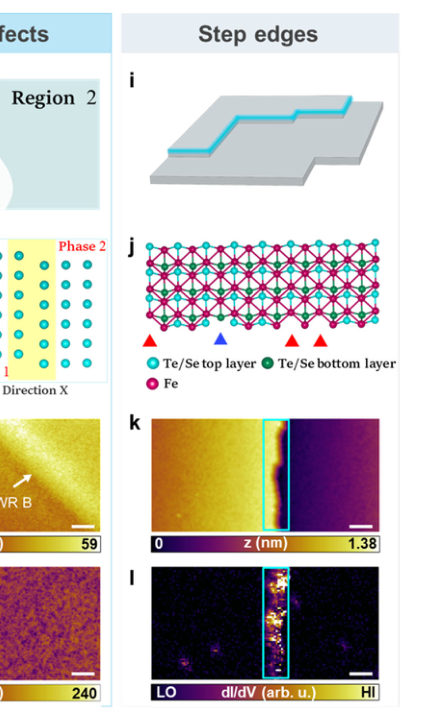
<figcaption class="paper-figure-caption"><b>Fig 1.</b> Fig. 1|Three types of defects on Fe(Te,Se). a, Illustration of magnetic (purple) and non-magnetic (gray)</figcaption>
</figure>
<figure class="paper-figure-card">
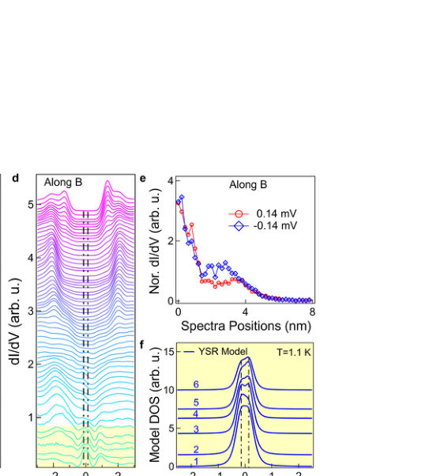
<figcaption class="paper-figure-caption"><b>Fig 2.</b> Fig. 2|Near-zero energy bound state at the step edge of Fe(Te,Se). a, STM image of a step edge at the bottom part. The two arrows indicate the path along which the dI/dV signals were acquired as shown in c-d. b, Two dI/dV spectra taken at the step edge (point 0 at the beginning of arrow A and arrow B). c, From bottom to top: equally spaced 61 dI/dV spectra taken along the 12 nm long arrow A shown in a. d, From bottom to top: equally spaced 60 dI/dV spectra taken along the 12 nm long arrow B shown in a. e, Normalized dI/dV signal at 0.14 mV and -0.14 mV extracted from d within 8 nm starting from the step edge. f, Model plot of the DOS by considering two particle-hole symmetric Lorentzian...</figcaption>
</figure>
<figure class="paper-figure-card">
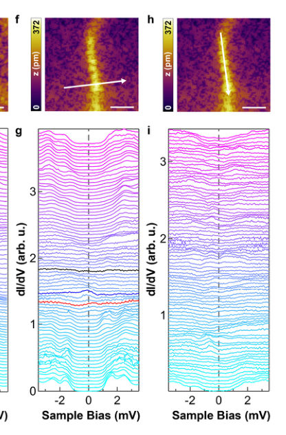
<figcaption class="paper-figure-caption"><b>Fig 3.</b> Fig. 3|In-gap states observed at the Type I wrinkle and Type II line defect bend. a, STM topography</figcaption>
</figure>
<figure class="paper-figure-card">
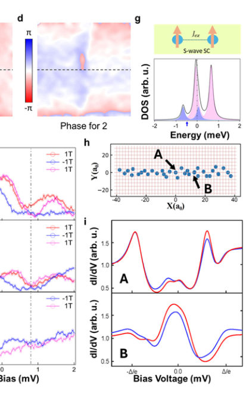
<figcaption class="paper-figure-caption"><b>Fig 4.</b> Fig. 4|Phase shift and spin polarized in-gap state at the Type II line defect bend. a, STM image of</figcaption>
</figure>
<figure class="paper-figure-card">
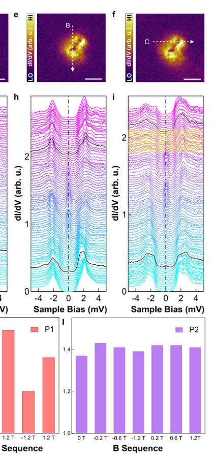
<figcaption class="paper-figure-caption"><b>Fig 5.</b> Fig. 5|Zero-energy bound states for impurities below the surface. a, STM topography of the surface impurity region with atomic resolution. b, The dI/dV map at 0 mV of the same region shown in a. c, The dI/dV taken at point 1 and point 2 indicated by arrows in a and b. d-f, Same as b with dashed arrows indicating where the dI/dV in g-i are taken. g-i, Equally spaced 81 dI/dV spectra along the direction shown in d-f for a total length of 12 nm (g), 14 nm (h) and 12 nm (i). The intensity plots are shown in Fig. S9 d-f. j, The peak energy position within the gap shown in g-i, respectively (in between the two black spectra). The yellow high-lighted region shows how the peak position shifts in i....</figcaption>
</figure>
</div>

<p><strong>Summary.</strong> This work investigates whether near-zero-energy states observed on the surface of an iron-based superconductor are true Majorana zero modes, crucial for topological quantum computing. Using spin-polarized STM, the researchers analyzed defects and found that the spectral signatures are consistently explained by trivial Yu-Shiba-Rusinov bound states rather than robust topological edge modes.</p>
<p><strong>Why it may be interesting.</strong> While not directly focused on AMO systems, the rigorous experimental methodology—using local probes (STM) combined with quantum mechanical diagnostics (spin/energy resolution)—provides a template for identifying exotic quasiparticles in condensed matter systems relevant to open quantum systems research.</p>
<details>
<summary>Detailed structure</summary>
<p><strong>Main problem.</strong> The central goal is to experimentally distinguish between true Majorana zero modes (MZMs) and topologically trivial defect states observed on the surface of an iron-based superconductor.</p>
<p><strong>Main result.</strong> Through detailed spin-polarized scanning tunneling spectroscopy, the authors conclude that the observed near-zero-energy localized states at various defects are better explained by Yu-Shiba-Rusinov bound states originating from unpaired electrons rather than true topological Majorana modes.</p>
<p><strong>Method.</strong> The study employs advanced Scanning Tunneling Microscopy/Spectroscopy (STM/STS), including spin polarization measurements, to map the density of states across different surface defects like step edges and line defects.</p>
<p><strong>Model / system.</strong> The physical system is the iron-based superconductor Fe(Te,Se). The analysis involves comparing measured spectroscopic signatures against theoretical models describing YSR bound states coupled by magnetic impurities.</p>
<p><strong>Key observables.</strong> Near-zero-energy localized states (Zero-Bias Peaks), spin polarization of the density of states ($ ext{SP-STS}$), and spectral weight transfer between positive and negative energies.</p>
<p><strong>Important parameters / regimes.</strong> Temperature, external magnetic field strength (up to 3 T), and tunneling bias voltage ($V_{	ext{bias}}$).</p>
<p><strong>Assumptions / limitations.</strong> The analysis assumes that true topological modes would exhibit specific signatures (e.g., dispersing behavior or unique spin dependence) which were not consistently found.</p>
<p><strong>Figures summary.</strong> Figures illustrate various defect types on the surface, showing $  ext{d}I/    ext{d}V$ maps and line spectra taken across step edges, wrinkles, and bends to characterize in-gap states.</p>
<p><strong>Paper structure.</strong> The paper systematically examines different classes of defects (step edges, Type I/II line defects) using STS. It progresses from initial observation of zero-bias peaks to detailed analysis involving spin polarization and comparison with established theoretical models for trivial bound states.</p>
</details>
<details>
<summary>Abstract</summary>
<p>Majorana zero modes, which obey non-Abelian exchange statistics, are promising candidates for topological quantum computation due to their robustness against environmental perturbations. The iron-based superconductor Fe(Te,Se) has been identified as an intrinsic topological superconductor, possibly hosting Majorana zero modes. In this paper, we report the observation of near-zero-energy localized states at multiple structural defects on the Fe(Te,Se) surface, which could be misidentified as Majorana zero modes without additional verification. By using spin-polarized scanning tunneling spectroscopy, we demonstrate that the near-zero-energy localized states on step edges and line defects originate from topologically trivial Yu-Shiba-Rusinov states. In addition, zero-energy bound states are also observed for regions without surface defects. A combined spatial and magnetic field dependent analysis of the spin-resolved tunneling spectra in these regions reveals that this type of zero-energy states cannot be attributed to the presence of Majorana bound states. These findings emphasize the importance of spin-dependent studies of low-energy states for pursuing Majorana zero modes.</p>
</details>
<p><sub><a href="#top">↑ back to top</a></sub></p>

<p><a id="paper-2606.17689"></a></p>
<h3 id="semiclassical-analysis-of-tunneling-in-graphene-under-nonuniform-electrostatic-and-magnetic-fields"><a href="http://arxiv.org/abs/2606.17689v1">Semiclassical Analysis of Tunneling in Graphene under Nonuniform Electrostatic and Magnetic Fields</a></h3>
<p><strong>Authors:</strong> Maria V. Perel<br>
<strong>Type:</strong> theory · <strong>Category:</strong> other · <strong>PDF:</strong> <a href="https://arxiv.org/pdf/2606.17689v1">https://arxiv.org/pdf/2606.17689v1</a><br>
<strong>Analysis basis:</strong> full PDF text, analyzed in chunks
<strong>Topic relevance:</strong> <code>Keldysh / 2PI / non-Gaussian methods</code> <strong>3/5</strong> · <code>Kondo &amp; dissipative impurity</code> <strong>1/5</strong> · <code>methods for driven-dissipative</code> <strong>1/5</strong> · <code>non-equilibrium dynamics</code> <strong>1/5</strong></p>
<div class="figure-strip-hint">↔ Scroll figures horizontally</div>
<div class="paper-figures-scroll">
<figure class="paper-figure-card">
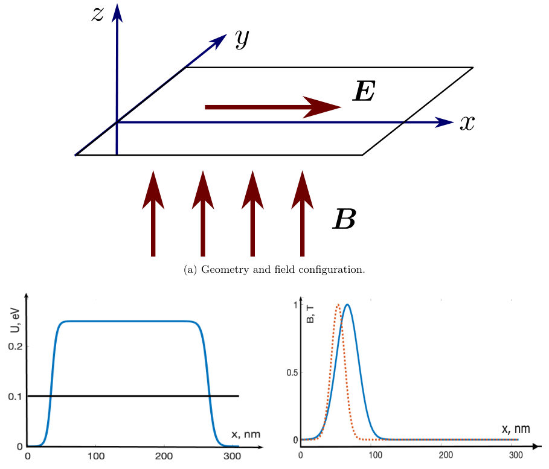
<figcaption class="paper-figure-caption"><b>Fig 1.</b> Figure 1: Schematic of Klein tunnelling in graphene under external fields. The horizontal line indicates the carrier energy E.</figcaption>
</figure>
<figure class="paper-figure-card">
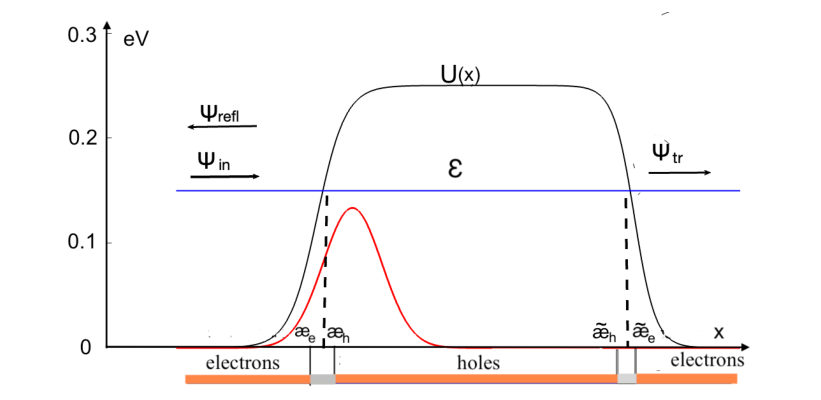
<figcaption class="paper-figure-caption"><b>Fig 2.</b> Figure 2: Charge carrier scattering at a potential barrier U(x) in a spatially varying magnetic field B(x). Horizontal line: carrier energy E. Incoming, reflected, and transmitted waves are Ψin, Ψrefl, and Ψtr. Dashed vertical lines indicate x = κE, defined by E = U(κE). Small ticks indicate the turning (degeneracy) points κe, κh, ˜κh, and ˜κe, which delimit the interfaces between classically allowed and forbidden regions. The central allowed region is hole-like, whereas the outer allowed regions are electron-like.</figcaption>
</figure>
<figure class="paper-figure-card">
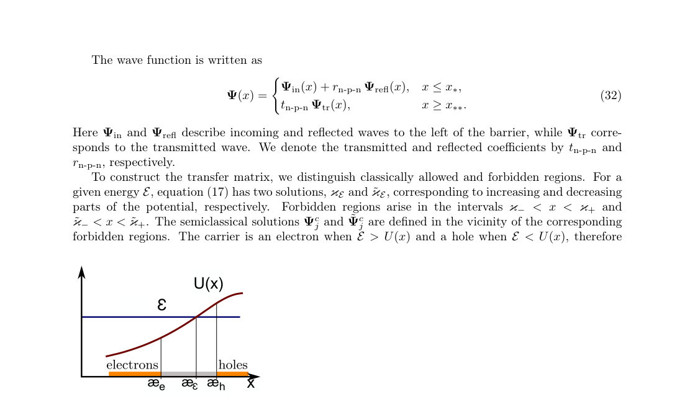
<figcaption class="paper-figure-caption"><b>Fig 3.</b> Figure 3: Turning points κe and κh for electrons and holes with energy E in a monotonically increasing electrostatic potential U(x). The classically allowed regions are x &lt; κe and x &gt; κh, whereas the classically forbidden region is κe &lt; x &lt; κh.</figcaption>
</figure>
<figure class="paper-figure-card">
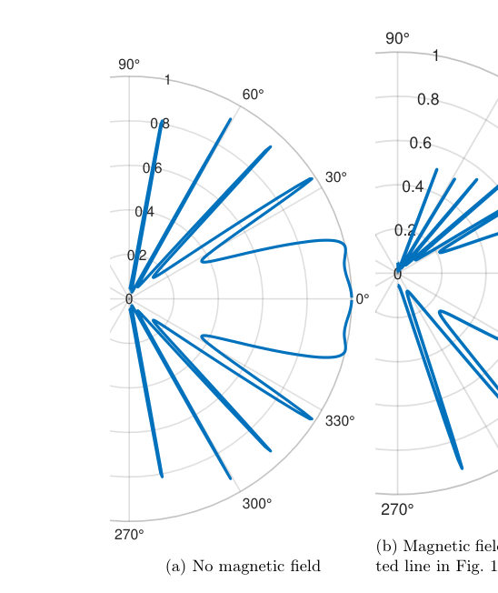
<figcaption class="paper-figure-caption"><b>Fig 4.</b> Figure 4: The absolute value of tn-p-n as a function of the angle of incidence on the barrier.</figcaption>
</figure>
</div>

<p><strong>Summary.</strong> This paper presents a comprehensive semiclassical theory for tunneling in graphene junctions under combined nonuniform electrostatic and magnetic fields. By developing explicit transfer matrix formalisms, the authors calculate transmission coefficients and predict resonance conditions, including 'magic' angles, demonstrating how external fields control electronic transport properties.</p>
<p><strong>Why it may be interesting.</strong> The use of semiclassical methods (WKB/transfer matrices) to solve quantum transport problems in structured materials like graphene is highly relevant for understanding mesoscopic electronic phenomena, which often bridge between continuum theory and discrete quantum effects.</p>
<details>
<summary>Detailed structure</summary>
<p><strong>Main problem.</strong> The paper develops a semiclassical theory to analyze the tunneling of Dirac fermions through an n-p-n junction in monolayer graphene when subjected to both nonuniform electrostatic and magnetic fields.</p>
<p><strong>Main result.</strong> Explicit expressions for reflection and transmission coefficients, including their phases, are derived as functions of energy and incidence angle. The work also establishes semiclassical conditions for Fabry–Pérot resonances and 'magic' angles where enhanced transmission occurs.</p>
<p><strong>Method.</strong> The analysis employs the WKB (semiclassical) approximation, treating the problem as a connection problem solved via transfer matrices across different potential regimes.</p>
<p><strong>Model / system.</strong> The physical system is monolayer graphene described by the 2D massless Dirac equation. The model incorporates spatially varying electrostatic potentials ($U(x)$ forming an n-p-n junction) and perpendicular magnetic fields ($B(x)$), both dependent only on one spatial coordinate.</p>
<p><strong>Key observables.</strong> Reflection coefficients ($r$), transmission coefficients ($t$), phases of $r$ and $t$, Fabry–Pérot resonance conditions, and 'magic' angles.</p>
<p><strong>Important parameters / regimes.</strong> Energy ($E$), incidence angle ($   heta$), magnetic field strength ($B(x)$), and the spatial variation parameters of the potentials.</p>
<p><strong>Assumptions / limitations.</strong> The fields are assumed to be smooth functions vanishing outside a finite interval. The analysis relies on the semiclassical approximation, which is valid away from turning points.</p>
<p><strong>Figures summary.</strong> Figures illustrate the schematic geometry of Klein tunneling under external fields and show numerical results detailing the angular dependence of transmission induced by the magnetic field.</p>
<p><strong>Paper structure.</strong> The paper builds the theory by first establishing the 1D Dirac equation governing the system. It then uses the transfer matrix formalism to calculate scattering coefficients for single junctions ($n-p$, $p-n$) and finally extends this to analyze Fabry–Pérot resonances across the full $n-p-n$ structure.</p>
</details>
<details>
<summary>Abstract</summary>
<p>We develop a semiclassical theory of tunnelling of Dirac fermions through an n-p-n junction in monolayer graphene subjected to a perpendicular magnetic field. Electrostatic and magnetic fields are assumed to be smooth functions of a single spatial coordinate, supported on a finite interval, vanishing outside it, and thus ensuring asymptotically free states. In contrast to earlier studies restricted to constant magnetic fields and exactly solvable electrostatic potential profiles, we consider a general electrostatic potential forming an n-p-n junction and an arbitrary magnetic field, and formulate the corresponding scattering problem. Within the semiclassical approximation, and under an additional assumption on the incidence angle, the problem reduces to a connection problem for a pair of degeneracy points, treated using results from our earlier work. We obtain explicit expressions for the reflection and transmission coefficients, including their phases, as functions of energy and incidence angle. Furthermore, we derive semiclassical conditions for Fabry-Pérot resonances and "magic" angles, and analyse the resulting interference pattern. Numerical results demonstrate the angular dependence of transmission induced by the magnetic field.</p>
</details>
<p><sub><a href="#top">↑ back to top</a></sub></p>

<p><a id="paper-2606.17804"></a></p>
<h3 id="spin-wave-phase-shifter-controlled-by-a-domain-wall-racetrack"><a href="http://arxiv.org/abs/2606.17804v1">Spin-Wave Phase Shifter Controlled by a Domain Wall Racetrack</a></h3>
<p><strong>Authors:</strong> Uladzislau Makartsou, Olena Tartakivska, Paweł Gruszecki, Anton Lutsenko, Sebastiaan van Dijken, Volodymyr V. Kruglyak, Maciej Krawczyk<br>
<strong>Type:</strong> theory · <strong>Category:</strong> other · <strong>PDF:</strong> <a href="https://arxiv.org/pdf/2606.17804v1">https://arxiv.org/pdf/2606.17804v1</a><br>
<strong>Analysis basis:</strong> full PDF text, analyzed in chunks
<strong>Topic relevance:</strong> <code>spintronics-quantum-optics interface</code> <strong>3/5</strong> · <code>analog quantum simulation</code> <strong>1/5</strong> · <code>exotic spin models in light-matter</code> <strong>1/5</strong> · <code>non-equilibrium dynamics</code> <strong>1/5</strong></p>
<div class="figure-strip-hint">↔ Scroll figures horizontally</div>
<div class="paper-figures-scroll">
<figure class="paper-figure-card">
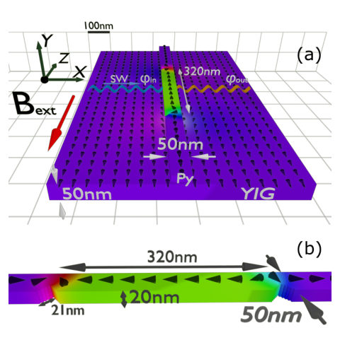
<figcaption class="paper-figure-caption"><b>Fig 1.</b> FIG. 1. Geometry and magnetic configuration of the simu- lated phase shifter. (a) Three-dimensional view of the model: A Py racetrack of 50 nm width and 20 nm thickness is sep- arated by 5 nm from a 50 nm thick YIG film. A static bias magnetic field of Bext = −15 mT is applied along the z-axis. SWs propagate in the YIG film along the x-direction. The SW phase evaluated before and after the Py stripe is shown by φin and φout, respectively. Black arrows indicate the equi- librium magnetization in YIG. (b) Micromagnetic state of the Py stripe: The magnetization in the central domain between the two notches located 320 nm apart is antiparallel to that in the outer parts of the stripe.</figcaption>
</figure>
<figure class="paper-figure-card">
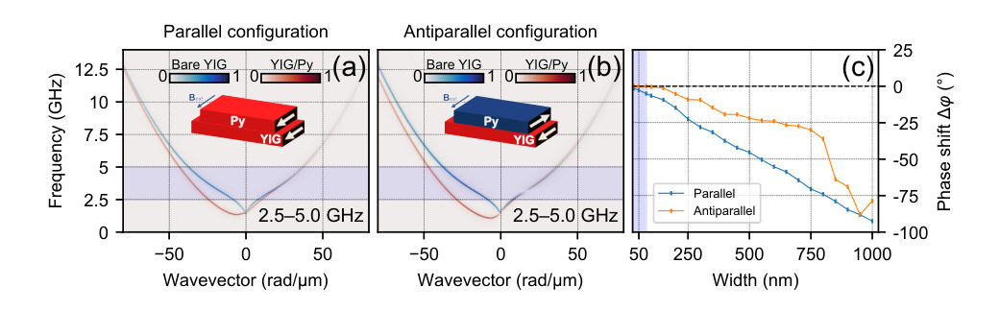
<figcaption class="paper-figure-caption"><b>Fig 2.</b> FIG. 2. Selecting the operating frequency regime. (a,b) Dispersion of a bare YIG film (blue) and YIG/Py bilayer (red) for two orientations of the magnetization in the Py layer: (a) parallel and (b) antiparallel to the magnetization of YIG. (c) The SW phase shift ∆φ induced by a uniformly magnetized Py stripe is shown as a function of the stripe’s width w for the parallel and antiparallel orientations of the stripe’s magnetization relative to that of YIG, the bias magnetic field Bext = −15 mT and the frequency f = 2.8 GHz. The transparent blue regions indicate the working frequency and width ranges.</figcaption>
</figure>
<figure class="paper-figure-card">
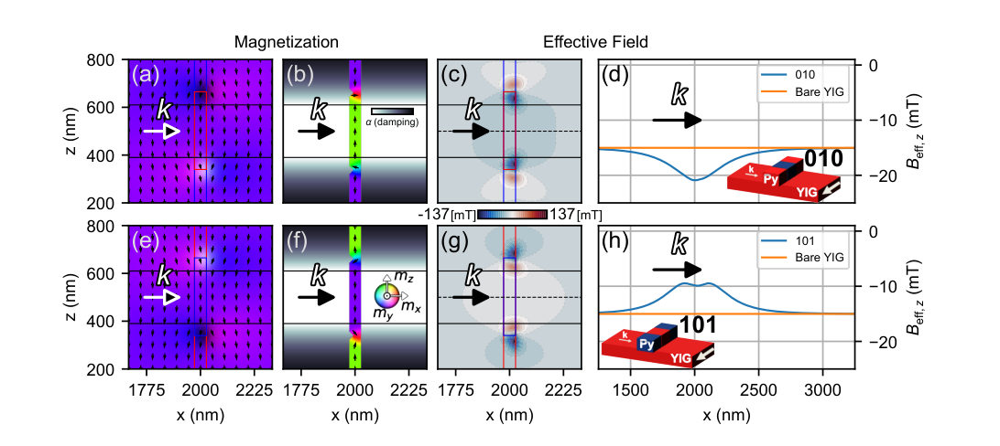
<figcaption class="paper-figure-caption"><b>Fig 3.</b> FIG. 3. Magnetization and effective-field landscapes underlying the DW-induced phase shifts. (a,e) Equilibrium magnetization texture in the YIG layer for (a) 010 and (e) 101 racetrack configurations shown in panels (b) and (f), respectively, for the racetrack width w = 50 nm and magnetic field Bext = −15 mT along the z-axis. The displayed magnetization maps correspond to the top surfaces of the YIG film and the racetrack. (c,g) Corresponding maps of the effective field component Beff,z in the YIG film with the stray field of the racetrack. In (b) and (f), the Gilbert damping parameter increased from the YIG nominal value in the middle to 0.5 at the film edges, as shown by the grey colour...</figcaption>
</figure>
<figure class="paper-figure-card">
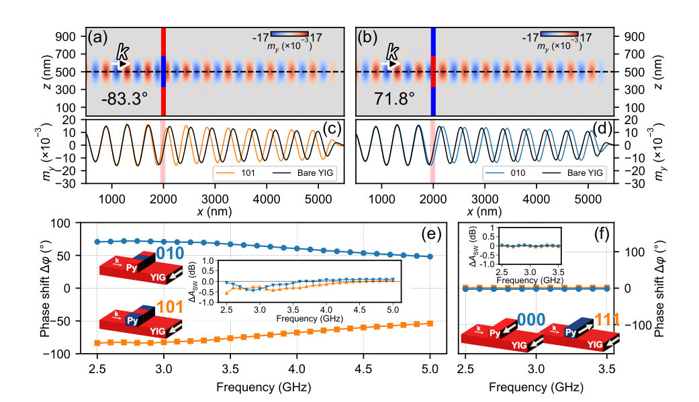
<figcaption class="paper-figure-caption"><b>Fig 4.</b> FIG. 4. Dynamic profiles of SWs propagating in the YIG channel for two DW configurations of the racetrack: (a,c) 101 and (b,d) 010. (a,b) Spatial maps of the dynamic magnetization component my showing SW propagation at frequency 3.0 GHz across the DW region (vertical bar), with the dashed lines indicating the position of the profiles shown in (c) and (d). (c,d) Corresponding one-dimensional my(x) profiles of SWs from the YIG film with (orange and blue lines) and without (black lines) the racetrack. (e) Frequency dependence of the accumulated phase shift of SWs ∆φ for the 101 and 010 configurations of the racetrack. Inset shows the frequency dependence of the transmitted SW intensity...</figcaption>
</figure>
<figure class="paper-figure-card">
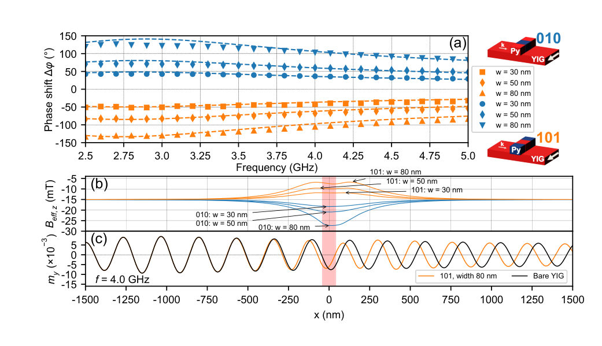
<figcaption class="paper-figure-caption"><b>Fig 5.</b> FIG. 5. Frequency dependence of the SW phase shift ∆φ for racetracks of 30, 50, and 80 nm width and 101 and 010 configurations. (a) Phase shift ∆φ(f) obtained from full MuMax3 simulations (markers) compared with predictions of the WKB-based semi-analytical model (dashed lines). (b) Corresponding effective-field profiles Beff,z(x) for different racetrack widths and both configurations obtained from simulations. (c) Spatial profiles of the dynamic magnetization component my(x) for a racetrack width of 80 nm in the 101 configuration at f = 4.0 GHz, illustrating the accumulated phase shift relative to the reference signal (black).</figcaption>
</figure>
</div>

<p><strong>Summary.</strong> This work proposes a novel spin-wave phase shifter by integrating a domain-wall racetrack into a magnonic waveguide. By exploiting the stray field from magnetic domain walls, researchers can induce large, controllable phase shifts ($\pm 90^\circ$) for propagating spin waves. This demonstrates a scalable route toward functional elements for information processing in magnonics.</p>
<p><strong>Why it may be interesting.</strong> While focused on classical magnetism, the concept of using engineered magnetic structures to control wave propagation phases is analogous to controlling quantum beam paths or implementing non-linear phase gates in photonic/quantum systems.</p>
<details>
<summary>Detailed structure</summary>
<p><strong>Main problem.</strong> The goal is to develop a compact, programmable spin-wave phase shifter for magnonic circuits by utilizing the stray field generated by magnetic domain walls.</p>
<p><strong>Main result.</strong> Moving domain walls on a racetrack structure can induce significant and tunable phase shifts (up to $\pm 90^\circ$) in propagating Damon-Eshbach spin waves without altering the waveguide's physical geometry.</p>
<p><strong>Method.</strong> The analysis relies heavily on micromagnetic simulations (MuMax3) complemented by semi-analytical models using the Wentzel–Kramers–Brillouin (WKB) approximation to calculate phase accumulation.</p>
<p><strong>Model / system.</strong> The system consists of a YIG film waveguide patterned with a Permalloy ($   ext{Py}$) domain-wall racetrack. The stray field from pinned magnetic domain walls modifies the internal effective magnetic field experienced by the spin waves propagating in the YIG layer.</p>
<p><strong>Key observables.</strong> Spin-wave phase shift ($\Delta\varphi$), SW wavelength change, and SW intensity attenuation ($\Delta A_{SW}$).</p>
<p><strong>Important parameters / regimes.</strong> Bias fields (e.g., $-15 	ext{ mT}$), operating frequencies (2.5–5 GHz), and material parameters for YIG and Py.</p>
<p><strong>Assumptions / limitations.</strong> The WKB model assumes slowly-varying fields, and the analysis often focuses on a single central 1D slice approximation of the stray field profile.</p>
<p><strong>Figures summary.</strong> Figures illustrate the geometry (Py racetrack over YIG), dispersion relations comparing bare vs. DW-modified waveguides, and spatial profiles of effective magnetic fields ($B_{	ext{eff},z}$) showing the influence of domain walls.</p>
<p><strong>Paper structure.</strong> The paper progresses by establishing the physical setup (racetrack/DW interaction), developing theoretical models (WKB approximation for phase shift calculation), presenting simulation results comparing DW-induced shifts to simpler stripe geometries, and concluding with the potential application in magnonic circuits.</p>
</details>
<details>
<summary>Abstract</summary>
<p>We propose a spin-wave phase shifter controlled using a domain-wall racetrack. The concept is demonstrated using micromagnetic simulations of a Permalloy domain-wall racetrack placed above a YIG film. The stray field from pinned domain walls modifies the internal magnetic field in the YIG region under the racetrack. This leads to a local change of the spin-wave wavelength and thereby enables control of the phase accumulated by Damon-Eshbach spin waves propagating through the region. Moving domain walls on the racetrack, the same physical structure can provide phase shifts of up to +/-90 degrees, without changing the waveguide geometry. A model based on the semiclassical approximation confirms that the phase shift is dominated by the domain-wall-induced stray field. These results suggest a route toward a compact programmable spin-wave phase shifter for interference-based magnonic circuits for information processing. Moreover, the demonstrated magnonic device integration with a magnetic domain-wall racetrack can lead to its application in in-memory computing.</p>
</details>
<p><sub><a href="#top">↑ back to top</a></sub></p>

<p><a id="paper-2606.17673"></a></p>
<h3 id="graphene-josephson-diodes-from-inherent-asymmetric-disorder"><a href="http://arxiv.org/abs/2606.17673v1">Graphene Josephson diodes from inherent asymmetric disorder</a></h3>
<p><strong>Authors:</strong> Ivan Villani, Luca Chirolli, Matteo Carrega, Alessandro Crippa, Elia Strambini, Francesco Giazotto, Vaidotas Miseikis, Camilla Coletti, Fabio Beltram, Kenji Watanabe, Takashi Taniguchi, Stefan Heun, Sergio Pezzini<br>
<strong>Type:</strong> both · <strong>Category:</strong> other · <strong>PDF:</strong> <a href="https://arxiv.org/pdf/2606.17673v1">https://arxiv.org/pdf/2606.17673v1</a><br>
<strong>Analysis basis:</strong> full PDF text, analyzed in chunks
<strong>Topic relevance:</strong> <code>Keldysh / 2PI / non-Gaussian methods</code> <strong>2/5</strong> · <code>driven-dissipative phase transition</code> <strong>2/5</strong> · <code>methods for driven-dissipative</code> <strong>2/5</strong> · <code>non-equilibrium dynamics</code> <strong>2/5</strong> · <code>Kondo &amp; dissipative impurity</code> <strong>1/5</strong> · <code>correlated / nonlocal dissipation</code> <strong>1/5</strong> · <code>interference shaping light</code> <strong>1/5</strong> · <code>non-equilibrium universality</code> <strong>1/5</strong></p>
<div class="figure-strip-hint">↔ Scroll figures horizontally</div>
<div class="paper-figures-scroll">
<figure class="paper-figure-card">
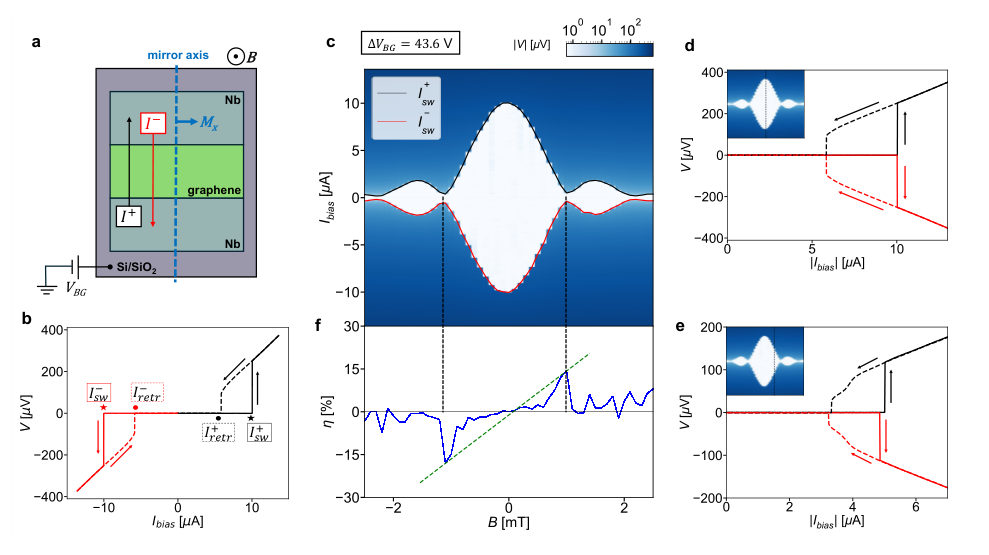
<figcaption class="paper-figure-caption"><b>Fig 1.</b> Figure 1: (a) Top view schematics of device layout. Graphene is encapsulated in hBN and edge-contacted by Nb leads. The heterostructure is placed on top of a Si/SiO2 substrate, which acts as a backgate via the application of a backgate voltage VBG. A current I is applied and flows through the junction, and the voltage drop is measured. Currents flowing in either positive (I+) or negative (I−) directions are indicated, respectively, in black and red. Magnetic field B is applied in the out-of-plane direction. Mirror symmetry axis Mx is indicated. (b) Voltage-current (V-I) curve at B = 0 showing switching-retrapping behaviour. Positive and negative flowing currents are represented respectively...</figcaption>
</figure>
<figure class="paper-figure-card">
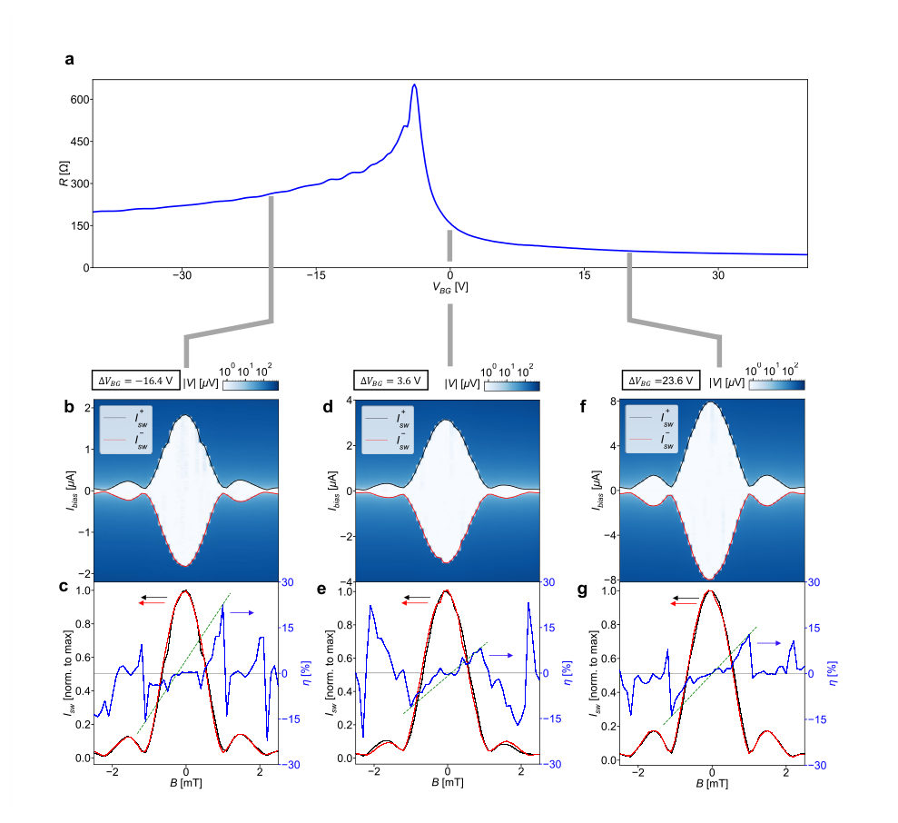
<figcaption class="paper-figure-caption"><b>Fig 2.</b> Figure 2: (a) Backgate sweep: sample resistance R as a function of backgate voltage VBG, measured by applying a large DC current bias. The acquisition position of the Fraunhofer patterns in b,d,f is indicated. T = 4.2 K, B = 0 T. (b-g) Upper row: Fraunhofer patterns (voltage drop |V | as function of out-of-plane magnetic field B and DC bias current Ibias). Lower row: corresponding rectification parameter η at different backgate voltage values. The relative position to the charge neutrality point ∆VBG = VBG −VCNP (VCNP = −3.6 V) is indicated at the top of each panel. (b-c) VBG = −20 V. (d-e) VBG = 0 V. (f-g) VBG = +20 V.</figcaption>
</figure>
<figure class="paper-figure-card">
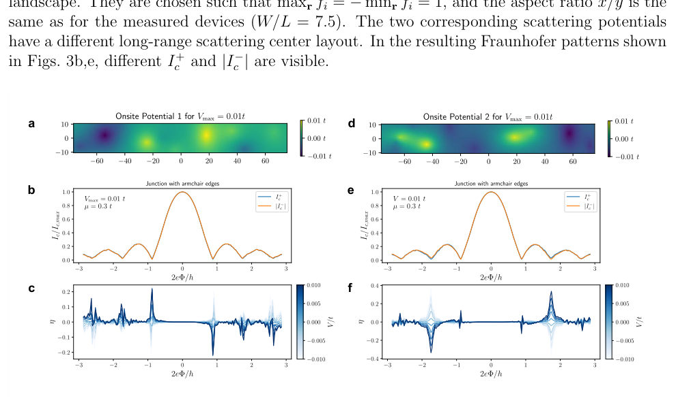
<figcaption class="paper-figure-caption"><b>Fig 3.</b> Figure 3: (a) Onsite potential V1(r) = V f1(r) for V = Vmax = 0.01 t. The spatial coordinates are in units of the lattice constant. (b) Calculated Fraunhofer patterns (I+ c and |I− c |) for V = Vmax and chemical potential µ = 0.3t. (c) Color-coded evolution of the rectification coefficient η for varying V in the range −Vmax &lt; V &lt; Vmax, as a function of applied magnetic flux 2eΦ/h. (d) Onsite potential V2(r) = V f2(r) for V = Vmax = 0.01 t. (e-f) Same as b,c, but for the onsite potential V2 shown in d.</figcaption>
</figure>
<figure class="paper-figure-card">
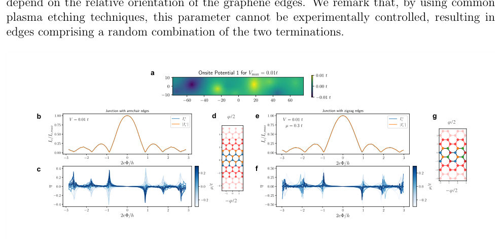
<figcaption class="paper-figure-caption"><b>Fig 4.</b> Figure 4: (a) Onsite potential V1 for V = Vmax = 0.01 t. (b) Calculated Fraunhofer patterns (I+ c and |I− c |) for the case of armchair edges for µ = 0.3t. (c) Color-coded evolution of the rectification coefficient η with chemical potential µ, crossing the Dirac point. (d) Graphene strip with armachair edges. (e-f) Same as b-c, but for a graphene strip with zigzag as shown in g.</figcaption>
</figure>
</div>

<p><strong>Summary.</strong> The research reports on achieving significant supercurrent rectification in graphene Josephson junctions using inherent structural disorder. By combining low-temperature experiments with theoretical modeling, the authors prove that even minor, unavoidable disorder can induce diode behavior by breaking mirror symmetry. This work is vital for advancing superconducting electronics based on 2D materials.</p>
<p><strong>Why it may be interesting.</strong> This work provides a clean platform (graphene) for observing non-reciprocal quantum transport phenomena, which are crucial for developing superconducting electronic components and understanding symmetry breaking in mesoscopic superconductors.</p>
<details>
<summary>Detailed structure</summary>
<p><strong>Main problem.</strong> The study demonstrates that graphene Josephson junctions inherently exhibit supercurrent rectification (Josephson diode effect) due to asymmetric disorder, even in highly clean systems.</p>
<p><strong>Main result.</strong> Supercurrent rectification efficiency exceeding 20% was achieved under an out-of-plane magnetic field, confirming that residual long-range disorder is sufficient to break the necessary mirror symmetry.</p>
<p><strong>Method.</strong> The work combines experimental measurements of V-I curves and Fraunhofer patterns with theoretical modeling based on a tight-binding Hamiltonian approach.</p>
<p><strong>Model / system.</strong> The physical system is an hBN-encapsulated graphene Josephson junction contacted by Niobium leads. The theory models the transport using a tight-binding Hamiltonian incorporating disorder potentials $V(x, y)$ and magnetic field effects.</p>
<p><strong>Key observables.</strong> Supercurrent rectification efficiency ($\eta$), switching currents ($I_{	ext{sw}+}, I_{	ext{sw}-}$), and Fraunhofer interference patterns modulated by current direction.</p>
<p><strong>Important parameters / regimes.</strong> Out-of-plane magnetic field ($B$), backgate voltage ($V_{BG}$), and the strength/nature of the long-range scattering potential (disorder).</p>
<p><strong>Assumptions / limitations.</strong> The analysis assumes that residual disorder provides the necessary asymmetry to break mirror symmetry, and approximations like the Andreev limit are used in theoretical derivations.</p>
<p><strong>Figures summary.</strong> Figures illustrate device schematics, V-I curves showing directional switching currents at different magnetic fields, and Fraunhofer patterns demonstrating non-reciprocity.</p>
<p><strong>Paper structure.</strong> The paper progresses from establishing the necessity of symmetry breaking (time-reversal + mirror) to presenting experimental evidence of high rectification efficiency, followed by theoretical modeling confirming that disorder is the source of this asymmetry.</p>
</details>
<details>
<summary>Abstract</summary>
<p>Josephson diodes are non-reciprocal superconducting devices characterized by different switching currents depending on the current flow direction. They recently attracted considerable theoretical and experimental attention, in view of their possible application as rectifying elements in the field of superconducting electronics, and as probes to investigate symmetry breaking mechanisms in mesoscopic systems. In this work, we show that graphene Josephson junctions provide rectification of supercurrent with an efficiency exceeding 20%. The effect appears applying a mT out-of-plane magnetic field and is enhanced close to the nodes of the Fraunhofer interference pattern. Our theoretical model identifies long-range scattering potentials in the junction as the symmetry-breaking mechanism, which yields supercurrent rectification in highly transparent junctions. While graphene stands as an ultra-clean transmission medium, our work shows that unavoidable residual disorder in a clean two-dimensional system is sufficient to promote this effect. Tailoring of the inversion (mirror) symmetry breaking could be obtained via proper design of external gates.</p>
</details>
<p><sub><a href="#top">↑ back to top</a></sub></p>

<p><a id="paper-2606.17502"></a></p>
<h3 id="hybrid-electronic-ionic-ferroelectricity-in-superlubric-van-der-waals-heterostructures"><a href="http://arxiv.org/abs/2606.17502v1">Hybrid Electronic-Ionic Ferroelectricity in Superlubric van der Waals Heterostructures</a></h3>
<p><strong>Authors:</strong> Jing Huang, Jun Kang, Daniel Bennett<br>
<strong>Type:</strong> theory · <strong>Category:</strong> statistical mechanics · <strong>PDF:</strong> <a href="https://arxiv.org/pdf/2606.17502v1">https://arxiv.org/pdf/2606.17502v1</a><br>
<strong>Analysis basis:</strong> full PDF text, analyzed in chunks
<strong>Topic relevance:</strong> <code>driven-dissipative phase transition</code> <strong>2/5</strong> · <code>methods for driven-dissipative</code> <strong>2/5</strong> · <code>non-equilibrium dynamics</code> <strong>2/5</strong> · <code>non-equilibrium universality</code> <strong>2/5</strong> · <code>Frenkel-Kontorova</code> <strong>1/5</strong> · <code>Keldysh / 2PI / non-Gaussian methods</code> <strong>1/5</strong> · <code>analog quantum simulation</code> <strong>1/5</strong></p>
<div class="figure-strip-hint">↔ Scroll figures horizontally</div>
<div class="paper-figures-scroll">
<figure class="paper-figure-card">
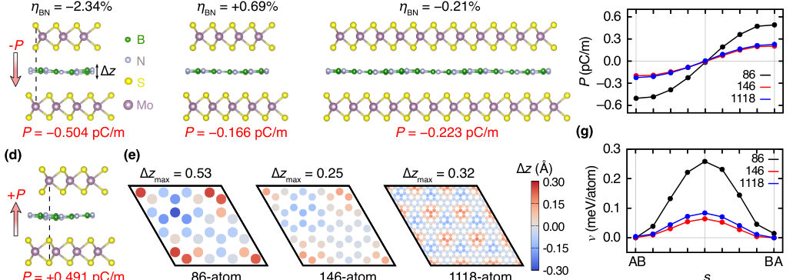
<figcaption class="paper-figure-caption"><b>Fig 1.</b> FIG. 1. (a)–(c) MoS2/hBN/MoS2 heterostructures for (a) 86-atom, (b) 146-atom, and (c) 1118-atom commensurate supercells, where ∆z represents the out-of-plane buckling of the buckled spacer. The biaxial strain ηBN imposed on the hBN spacer in each supercell is shown above, and the out-of-plane polarization P is shown below in red. (d) The 86-atom supercell after sliding of the outer layers, which reverses the direction of the polarization, indicated by the red arrow. (e) Out-of-plane buckling of the atoms in the hBN spacer layer for the three supercells, where ∆zmax is the maximum displacement. (f) Polarization P, and (g) relative change in energy ν as a function of the NEB parameter (s)...</figcaption>
</figure>
<figure class="paper-figure-card">
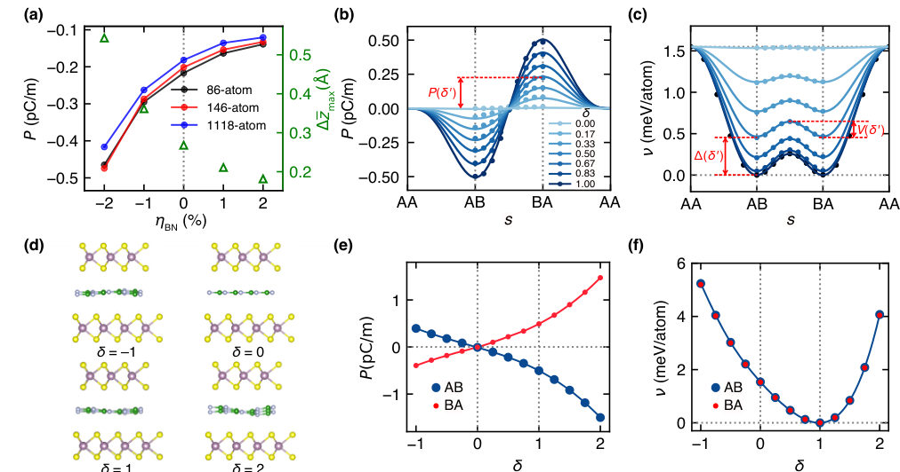
<figcaption class="paper-figure-caption"><b>Fig 2.</b> FIG. 2. (a) Out-of-plane polarization P as a function of biaxial strain imposed on the hBN spacer layer for 86-atom (black), 146-atom (red) and 1118-atom (blue) MBM supercells. The average out-of-plane atomic displacement ∆¯z of the spacer is shown in green. (b), (c) Polarization P and relative energy ν along the NEB path (s) for different fixed values of δ. The data points are results obtained from first-principles calculations, and the solid lines represent fitting to the analytic model described by Eq. (1). The model parameters V, P and ∆from Eq. (1) are highlighted in red for δ ′ = 0.5. (d) Side views of the AB stacked MBM structures in (b) and (c) at δ = −1,0,1,2. (e), (f) P and ν as a...</figcaption>
</figure>
<figure class="paper-figure-card">
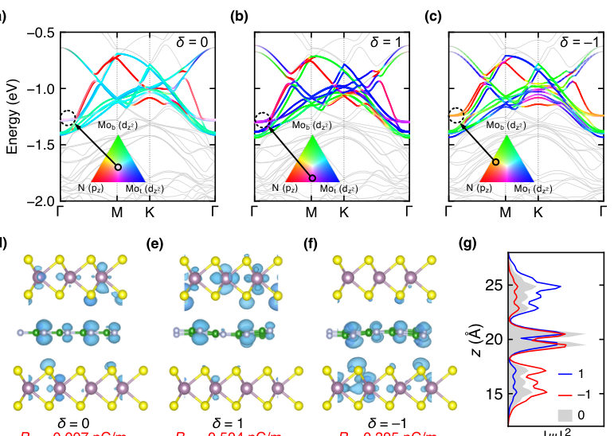
<figcaption class="paper-figure-caption"><b>Fig 3.</b> FIG. 3. (a)–(b) Electronic band structure of an 86-atom MBM supercell for a δ = 0, (b) δ = 1 and (c) δ = −1. The orbital projection of the low-energy valence bands are shown, projecting onto the N pz states (red), and Mo 3dz2 states of the bottom (green) and top (blue) layers. The highlighted states at Γ show hybridization between (a) all three layers (white), (b) the spacer and top layer (pink), and (c) the spacer and bottom layer (orange). (d)–(f) Wavefunction of the state at Γ highlighted in the band structure. (g) Magnitude squared of the same wavefunctions in the out-of-plane direction, averaged in-plane, for δ = 0 (gray region), δ = 1 (blue line) and δ = −1 (red line).</figcaption>
</figure>
<figure class="paper-figure-card">
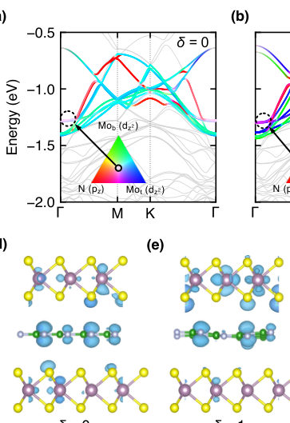
<figcaption class="paper-figure-caption"><b>Fig 4.</b> Fig. 4 shows the four hysteresis loops I–IV as well as the corresponding buckling order parameter δ(E) below. The blue lines represent a sketch of the phase transitions, whereas the orange lines are numerical results obtained from minimiz- ing the model fit to first-principles calculations of MBM. For type I (Fig. 4 (a)), Es (sliding) occurs first, and there is in- sufficient energy to modify the buckling before the sliding is initiated. The spacer is effectively stiff, and the system be- haves like a conventional sFE, with a first-order hysteresis loop [2, 4]. For type II (Fig. 4 (b)), Em δ occurs first, and the spacer begins to un-buckle before sliding occurs. Sliding is accompanied by a...</figcaption>
</figure>
<figure class="paper-figure-card">

<figcaption class="paper-figure-caption"><b>Fig 5.</b> FIG. 4. (a)–(d) ferroelectric hysteresis loop P(E) (top) and corresponding buckling order parameter δ(E) for the four types I–IV in the analytic model Eq. (1). The three critical electric fields Es, Em δ and E0 δ are shown on the horizontal axes, where Pm is the polarization at Em δ . The blue lines represent a schematic description of hysteresis, while the thick orange lines denote the results obtained from the model calculations, fitting Eq. (1) to the first-principles calculations of the 86-atom MBM supercell.</figcaption>
</figure>
</div>

<p><strong>Summary.</strong> This theoretical work investigates ferroelectricity in superlubric van der Waals heterostructures, demonstrating that the polarization mechanism is not simply due to sliding but results from a hybrid electronic-ionic coupling involving spacer layer buckling. By developing and analyzing an energy functional dependent on both stacking order and buckling, the authors establish these systems as a distinct class of ferroelectrics exhibiting complex switching behaviors.</p>
<p><strong>Why it may be interesting.</strong> While focused on condensed matter ferroelectrics, the use of coupled order parameters ($ ext{s}$ and $\delta$) to describe emergent collective behavior under external fields shares conceptual parallels with modeling many-body dynamics or phase transitions in open quantum systems where multiple degrees of freedom interact non-trivially.</p>
<details>
<summary>Detailed structure</summary>
<p><strong>Main problem.</strong> To understand the physical mechanism of polarization and ferroelectricity in Superlubric sliding ferroelectrics (SL-sFEs) and how they fundamentally differ from conventional sliding ferroelectrics.</p>
<p><strong>Main result.</strong> Polarization arises from a unique hybrid electronic-ionic coupling between interlayer sliding and the out-of-plane buckling of the spacer layer, leading to distinct ferroelectric hysteresis types.</p>
<p><strong>Method.</strong> The study employs first-principles calculations (DFT) combined with continuum Landau-like models parameterized by key order parameters like stacking ($s$) and buckling ($\delta$).</p>
<p><strong>Model / system.</strong> The system is modeled using van der Waals heterostructures, such as $   ext{MoS}_2/ ext{hBN}/   ext{MoS}_2$, where the total energy depends on sliding and spacer buckling parameters.</p>
<p><strong>Key observables.</strong> Out-of-plane polarization ($P$), interlayer sliding friction/energy barrier, and out-of-plane buckling ($\Delta z$).</p>
<p><strong>Important parameters / regimes.</strong> Strain ($\eta_{	ext{BN}}$) imposed on the spacer layer; critical limits defined by flat ($\delta=0$) or maximum buckling ($\delta_m$) states.</p>
<p><strong>Assumptions / limitations.</strong> The polarization is not solely driven by sliding, but requires an active coupling mechanism mediated by the spacer's out-of-plane deformation.</p>
<p><strong>Figures summary.</strong> Figures illustrate polarization vs. strain/buckling parameter ($\delta$), showing smooth approaches to zero polarization at $\delta=0$, and map out four distinct types of ferroelectric hysteresis loops based on critical field ordering.</p>
<p><strong>Paper structure.</strong> The paper progresses by first establishing the physical system (SL-sFEs), deriving a continuum energy functional dependent on two order parameters ($s$ and $\delta$), analyzing the stationary conditions for these parameters, and finally classifying the resulting complex ferroelectric phase diagrams via hysteresis loops.</p>
</details>
<details>
<summary>Abstract</summary>
<p>One strategy to lower the switching barrier in a sliding ferroelectric (sFE) is to insert an incommensurate spacer to reduce sliding friction, creating a superlubric sliding ferroelectric (SL-sFE). However, how polarization survives across the effectively decoupled outer layers remains an open question. We show that SL-sFEs are fundamentally different from conventional sFEs: polarization is not driven by sliding alone, but by an intricate coupling between interlayer sliding and the out-of-plane buckling of the spacer layer. This coupling results in a unique hybrid electronic-ionic polarization arising from asymmetric orbital hybridization. The interplay of these order parameters generates several distinct types of ferroelectric hysteresis, including mixed first- and second-order transitions, multi-step switching, and antiferroelectric-like behavior, establishing SL-sFEs as a distinct class of ferroelectrics.</p>
</details>
<p><sub><a href="#top">↑ back to top</a></sub></p>

<p><a id="paper-2606.17392"></a></p>
<h3 id="dispersive-mode-coupling-in-math1263math-doped-semiconductor-nanomechanical-resonators"><a href="http://arxiv.org/abs/2606.17392v1">Dispersive mode coupling in $p$-doped semiconductor nanomechanical resonators</a></h3>
<p><strong>Authors:</strong> Ankang Liu, Mahmoud T. Elewa, Mark I. Dykman<br>
<strong>Type:</strong> theory · <strong>Category:</strong> other · <strong>PDF:</strong> <a href="https://arxiv.org/pdf/2606.17392v1">https://arxiv.org/pdf/2606.17392v1</a><br>
<strong>Analysis basis:</strong> full PDF text, analyzed in chunks
<strong>Topic relevance:</strong> <code>driven-dissipative phase transition</code> <strong>2/5</strong> · <code>Keldysh / 2PI / non-Gaussian methods</code> <strong>1/5</strong> · <code>analog quantum simulation</code> <strong>1/5</strong> · <code>correlated / nonlocal dissipation</code> <strong>1/5</strong> · <code>correlated cavity matter</code> <strong>1/5</strong> · <code>methods for driven-dissipative</code> <strong>1/5</strong> · <code>non-equilibrium dynamics</code> <strong>1/5</strong> · <code>spintronics-quantum-optics interface</code> <strong>1/5</strong></p>
<div class="figure-strip-hint">↔ Scroll figures horizontally</div>
<div class="paper-figures-scroll">
<figure class="paper-figure-card">

<figcaption class="paper-figure-caption"><b>Fig 1.</b> FIG. 1. The coordinate system for a thin square plate with side length Ls and thickness hs. For a plate cut out along the ⟨100⟩crystalline axes, the coordinates (x1, x2, x3) are parallel to the axes, as indicated by the black arrows. For a plate cut out (in the plane) along the ⟨110⟩axes, the coordinates (x, y) are shown by the red arrows, while the z-coordinate is still normal to the plate.</figcaption>
</figure>
<figure class="paper-figure-card">

<figcaption class="paper-figure-caption"><b>Fig 2.</b> FIG. 2. Temperature dependence of the eigenfrequencies of the second Lamé and torsional modes, ∆α = [ωα(T) − ωα(T0)]/ωα(T0) for a plate cut out along the ⟨110⟩axes. We set T0 = 298 K. Solid lines show the temperature dependence in the presence of doping, whereas the results for undoped crystals are shown by dashed lines.</figcaption>
</figure>
<figure class="paper-figure-card">

<figcaption class="paper-figure-caption"><b>Fig 3.</b> Figure 3 shows the temperature dependence of the shift of the torsional mode frequency induced by the Lamé mode. These results provide numerical substantiation of the qualitative arguments presented above. At low hole density, nh = 2 × 1019 cm−3, the scaled shift decreases monotonically with the increasing temperature, consis- tent with the estimate ∥ˆΛ(4)∥∝nh/(kBT)3 for a nonde- generate hole gas. Physically, thermal motion broadens the hole distribution, resulting in a reduced sensitivity to the strain-induced change of the hole energy bands. At higher densities, nh = 1 × 1020 cm−3, the tempera- ture dependence becomes nonmonotonic. In this regime, the hole gas is degenerate at low...</figcaption>
</figure>
<figure class="paper-figure-card">

<figcaption class="paper-figure-caption"><b>Fig 4.</b> FIG. 4. Temperature dependence of the cross-Kerr frequency shift ℵLT of the second Lamé mode scaled by the squared am- plitude of the torsional mode. The parameter ℵLT is defined in Eq. (24). The plots refer to a square single-crystal silicon plate with the ratio of the thickness to length hs/Ls = 0.1. The panels show the results for the crystal orientations ⟨100⟩ and ⟨110⟩. The upper and lower panels refer to the hole den- sity nh = 2.0 × 1019 cm−3 and nh = 1.0 × 1020 cm−3, respec- tively.</figcaption>
</figure>
<figure class="paper-figure-card">

<figcaption class="paper-figure-caption"><b>Fig 5.</b> FIG. 3. Temperature dependence of the cross-Kerr frequency shift ℵTL of the torsional mode scaled by the squared ampli- tude of the second Lamé mode. The parameter ℵTL is defined in Eq. (25). The results refer to a square single-crystal silicon plate with the ratio of the thickness to length hs/Ls = 0.1. The panels show the results for the crystal orientations ⟨100⟩ and ⟨110⟩. The upper and lower panels refer to the hole den- sity nh = 2.0 × 1019 cm−3 and nh = 1.0 × 1020 cm−3, respec- tively.</figcaption>
</figure>
</div>

<p><strong>Summary.</strong> The paper theoretically analyzes dispersive mode coupling in $p$-doped semiconductor nanoresonators by incorporating strain effects on the valence band hole energy. It demonstrates that doping strongly enhances this nonlinear interaction, providing a mechanism to tune mechanical properties via carrier concentration. This has practical implications for developing highly stable quantum sensors and clocks.</p>
<p><strong>Why it may be interesting.</strong> This work models nonlinear dynamics in a solid-state platform where electronic structure (hole doping) directly modifies mechanical properties. The strong, tunable nonlinearity makes it relevant to quantum sensing and optomechanics.</p>
<details>
<summary>Detailed structure</summary>
<p><strong>Main problem.</strong> The study investigates how doping in semiconductor nanomechanical resonators enhances dispersive mode coupling (cross-Kerr nonlinearity) between vibrational modes.</p>
<p><strong>Main result.</strong> Doping significantly strengthens the coupling compared to intrinsic effects, and this enhancement is nonmonotonic with hole density. The system can utilize this effect for temperature stabilization or compensating frequency shifts.</p>
<p><strong>Method.</strong> The analysis uses a free energy expansion in strain ($\Delta F$) derived from diagonalizing the Luttinger–Kohn–Bir–Pikus Hamiltonian for valence band holes.</p>
<p><strong>Model / system.</strong> The physical system is a $p$-doped semiconductor nanomechanical resonator, modeled by coupling mechanical vibrational modes (governed by $H_{lin}$) to nonlinear terms arising from strain-dependent hole free energy ($\Delta F$).</p>
<p><strong>Key observables.</strong> Cross-Kerr coupling parameters ($\gamma$), frequency shifts ($\delta\omega_\alpha$), and phase diffusion coefficients ($D_{	ext{ph}}^\alpha$).</p>
<p><strong>Important parameters / regimes.</strong> Hole density ($n_h$), temperature ($T$), and the ratio of doping-induced to intrinsic nonlinearities.</p>
<p><strong>Assumptions / limitations.</strong> The adiabatic approximation is used, assuming hole thermalization time is much shorter than vibrational timescales. The analysis often neglects renormalization effects in coupling parameters.</p>
<p><strong>Figures summary.</strong> Figures illustrate the temperature dependence of eigenfrequencies and cross-Kerr shifts ($\aleph_{TL}, \aleph_{LT}$), as well as the nonmonotonic density dependence of these shifts for different crystal orientations.</p>
<p><strong>Paper structure.</strong> The paper progresses by establishing the Hamiltonian, deriving the strain-dependent free energy expansion, calculating mode coupling coefficients using this expansion, and finally analyzing the resulting frequency shifts and temperature/density dependencies for specific resonator geometries (thin plates).</p>
</details>
<details>
<summary>Abstract</summary>
<p>Dispersive coupling between vibrational modes with different frequencies is a major nonlinear dynamical effect. We show that in $p$-doped semiconductors such coupling is strongly enhanced. Moreover, the coupling parameters increase with the order of the nonlinearity. The doping-induced dispersive coupling becomes much stronger than the intrinsic one already for moderately strong doping. Its dependence on the hole density is nonmonotonic, and the temperature dependence becomes nonmonotonic for higher densities. Relevant mesoscopic frequency fluctuations are briefly discussed. The results are applied to Si resonators, where doping is used to compensate the temperature dependence of a clock mode, whereas another low-frequency mode is used as a thermometer to enable temperature stabilization.</p>
</details>
<p><sub><a href="#top">↑ back to top</a></sub></p>

<p><a id="paper-2606.17238"></a></p>
<h3 id="vector-peakon-equations-and-isospectral-flows-in-clifford-algebras"><a href="http://arxiv.org/abs/2606.17238v1">Vector peakon equations and isospectral flows in Clifford algebras</a></h3>
<p><strong>Authors:</strong> Andrew N. W. Hone, Vladimir S. Novikov, Jacek Szmigielski<br>
<strong>Type:</strong> theory · <strong>Category:</strong> other · <strong>PDF:</strong> <a href="https://arxiv.org/pdf/2606.17238v1">https://arxiv.org/pdf/2606.17238v1</a><br>
<strong>Analysis basis:</strong> full PDF text, analyzed in chunks
<strong>Topic relevance:</strong> <code>Frenkel-Kontorova</code> <strong>1/5</strong> · <code>Keldysh / 2PI / non-Gaussian methods</code> <strong>1/5</strong> · <code>analog quantum simulation</code> <strong>1/5</strong> · <code>non-equilibrium dynamics</code> <strong>1/5</strong></p>
<div class="figure-strip-hint">↔ Scroll figures horizontally</div>
<div class="paper-figures-scroll">
<figure class="paper-figure-card">

<figcaption class="paper-figure-caption"><b>Fig 1.</b> Figure 1: Travelling wave profile of ˆU given by (3.16), plotted against Z.</figcaption>
</figure>
<figure class="paper-figure-card">

<figcaption class="paper-figure-caption"><b>Fig 2.</b> Figure 2: Travelling wave profile of u against z. Figure 3: Liouville torus projected to ( ˆU, ψ′, ϑ′).</figcaption>
</figure>
<figure class="paper-figure-card">

<figcaption class="paper-figure-caption"><b>Fig 3.</b> Figure 4: HS2 peakons satisfying (4.16).</figcaption>
</figure>
</div>

<p><strong>Summary.</strong> This work analyzes complex, multi-component generalizations of the Camassa–Holm equation using Clifford algebras. It establishes deep connections between these PDEs and integrable Hamiltonian systems by employing advanced mathematical tools like spectral theory and reciprocal transformations. The research yields explicit solutions for peakon dynamics in the high-frequency limit, providing a comprehensive classification of related integrable models.</p>
<p><strong>Why it may be interesting.</strong> While focused on classical PDEs, the rigorous mathematical machinery—integrability theory, spectral methods, and Hamiltonian reduction—is highly relevant to understanding non-linear wave phenomena in quantum field theories or effective descriptions of many-body systems where continuum limits are taken.</p>
<details>
<summary>Detailed structure</summary>
<p><strong>Main problem.</strong> The study investigates integrable, coupled systems of partial differential equations (PDEs) that represent vector perturbations of the Camassa–Holm equation within the mathematical framework of Clifford algebras.</p>
<p><strong>Main result.</strong> The authors provide a complete classification of integrable two-component CH perturbations and derive explicit solutions for multi-peakon dynamics in the high-frequency limit, showing connections to Liouville integrable Hamiltonian systems.</p>
<p><strong>Method.</strong> The analysis employs advanced techniques including spectral theory on Clifford algebras, reciprocal transformations, Lax pair formulations, and reduction to finite-dimensional Hamiltonian systems via travelling wave assumptions.</p>
<p><strong>Model / system.</strong> The core model is a $d$-component vector PDE system derived from an isospectral deformation problem in $   ext{C}\ell(W)$, generalizing the scalar Camassa–Holm equation. Specific focus is placed on the two-component case ($d=2$) and its high-frequency (Hunter-Saxton) limit.</p>
<p><strong>Key observables.</strong> Conserved functionals/densities, peakon positions ($x_N$), amplitudes ($m_{ij}$), and the Weyl function $W(\lambda, t)$.</p>
<p><strong>Important parameters / regimes.</strong> The number of components ($d$), the arbitrary constant $\alpha$, and the specific parameters defining the initial conditions for multi-peakons.</p>
<p><strong>Assumptions / limitations.</strong> The analysis often assumes zero background solutions when studying travelling waves, and integrability is defined by the existence of an infinite hierarchy of local higher symmetries.</p>
<p><strong>Figures summary.</strong> Figures illustrate the time evolution of two-component peakon positions and amplitudes for the HS2 system, showing asymptotic periodicity or divergence. Other figures show Liouville tori projections related to the Hamiltonian reduction.</p>
<p><strong>Paper structure.</strong> The paper progresses from establishing the general integrable structure via Clifford algebras and symmetries (symmetries classification) to analyzing specific reductions like the $d=2$ case using reciprocal transformations, culminating in explicit solutions for multi-peakon dynamics in the high-frequency limit.</p>
</details>
<details>
<summary>Abstract</summary>
<p>Starting from a spectral problem posed in a Clifford algebra with $d$ generators and Euclidean signature, we study an integrable, coupled system of PDEs that can be viewed as a vector perturbation of the Camassa--Holm equation with residual orthogonal symmetry. In the two-component case $d=2$, we show that the travelling wave solutions correspond to a Liouville integrable Hamiltonian system with two degrees of freedom, making use of a reciprocal transformation linking the coupled PDEs to a symmetry of the Hirota--Satsuma system. We also present a symmetry classification of all integrable two-component perturbations of Camassa--Holm, and find that besides the $d=2$ system analyzed here, the coupled 2CH system studied by Olver and Rosenau (as well as by Chen, Liu and Zhang, and Falqui), and equations related to either of those systems by Miura transformations, we also obtain a new system that (to the best of our knowledge) has not been reported previously. For the case of an arbitrary number of components $d$, we additionally investigate the short-pulse (high-frequency) regime, in which the limiting dynamics are governed by a vector-valued Hunter-Saxton type system. Furthermore, we provide a detailed analysis of the corresponding measure-valued (weak) solutions associated with this system.</p>
</details>
<p><sub><a href="#top">↑ back to top</a></sub></p>

<p><a id="paper-2606.17547"></a></p>
<h3 id="beyond-the-interface-persistent-hopping-transport-and-frequency-dispersion-in-strong-inversion-cryogenic-mosfets"><a href="http://arxiv.org/abs/2606.17547v1">Beyond the interface: Persistent Hopping Transport and Frequency Dispersion in Strong-inversion Cryogenic MOSFETs</a></h3>
<p><strong>Authors:</strong> Keito Yoshinaga, Wataru Miyagi, Ryo Toyoshima, Munehiro Tada, Ken Uchida<br>
<strong>Type:</strong> experiment · <strong>Category:</strong> disordered systems and neural networks · <strong>PDF:</strong> <a href="https://arxiv.org/pdf/2606.17547v1">https://arxiv.org/pdf/2606.17547v1</a><br>
<strong>Analysis basis:</strong> full PDF text, analyzed in chunks
<strong>Topic relevance:</strong> <code>Kondo &amp; dissipative impurity</code> <strong>1/5</strong></p>
<div class="figure-strip-hint">↔ Scroll figures horizontally</div>
<div class="paper-figures-scroll">
<figure class="paper-figure-card">

<figcaption class="paper-figure-caption"><b>Fig 1.</b> Figure 1. (a, b) Drain-current versus gate-voltage Id −Vg characteristics at various stage temperatures</figcaption>
</figure>
<figure class="paper-figure-card">

<figcaption class="paper-figure-caption"><b>Fig 2.</b> Figure 2. Cole–Cole plots at Vg &gt; Vth. (a) At 300 K, the response is purely resistive. (b) At 4.2 K, the</figcaption>
</figure>
<figure class="paper-figure-card">

<figcaption class="paper-figure-caption"><b>Fig 3.</b> Figure 3. (a) Conventional models assume that band-tail states are confined to the interface. (b) In reality,</figcaption>
</figure>
<figure class="paper-figure-card">

<figcaption class="paper-figure-caption"><b>Fig 4.</b> Figure 4. (a) Equivalent circuit of the VRH network and inversion channel. (b) Vg dependence of the</figcaption>
</figure>
</div>

<p><strong>Summary.</strong> This work investigates intrinsic frequency dispersion in MOSFETs operating at cryogenic temperatures. The authors demonstrate that this dispersion originates from variable-range hopping through band-tail states caused by ionized impurities distributed throughout the depletion region, not just at the oxide interface. This provides a critical correction for accurately modeling high-frequency behavior in cryo-CMOS circuits.</p>
<p><strong>Why it may be interesting.</strong> While focused on solid-state electronics, the underlying physics—variable-range hopping in disordered potentials induced by impurities—is a canonical problem studied in condensed matter theory related to localization phenomena.</p>
<details>
<summary>Detailed structure</summary>
<p><strong>Main problem.</strong> To characterize intrinsic frequency dispersion in the channel impedance of cryogenic MOSFETs, particularly deep into the strong-inversion region.</p>
<p><strong>Main result.</strong> The frequency dispersion is attributed to variable-range hopping through band-tail localized states induced by ionized impurities distributed throughout the depletion region, even when drift conduction dominates.</p>
<p><strong>Method.</strong> Impedance measurements using LCR meters and analysis via Cole–Cole (Nyquist) plots, combined with DC electrical characterization across varying temperatures and gate voltages.</p>
<p><strong>Model / system.</strong> The physical system is cryogenic complementary metal-oxide-semiconductor (cryo-CMOS) MOSFETs. The model involves analyzing transport mechanisms in the presence of electrostatic disorder from ionized impurities within the semiconductor depletion region.</p>
<p><strong>Key observables.</strong> Frequency dispersion characterized by a depressed semicircle in Cole–Cole plots; temperature dependence of conductance ($g_d \propto \exp(T/T_0)^{-1/3}$); extracted circuit parameters ($R_{DC}, R_{AC}, C_{AC}$).</p>
<p><strong>Important parameters / regimes.</strong> Cryogenic temperatures (down to 4.2 K); strong-inversion regime; high channel doping levels.</p>
<p><strong>Assumptions / limitations.</strong> The frequency dispersion is governed by hopping conduction through impurity-induced band-tail states, which persists even when drift conduction dominates the DC current.</p>
<p><strong>Figures summary.</strong> Figures show $ ext{I}_d-   ext{V}_g$ curves and Cole–Cole plots demonstrating the transition to depressed semicircles at low temperatures. Other figures detail the comparison between conventional interface-confined models and the proposed impurity-distributed model.</p>
<p><strong>Paper structure.</strong> The paper establishes the problem of intrinsic frequency dispersion in cryo-MOSFETs, presents measurements showing this dispersion via Cole-Cole plots, develops a theoretical framework attributing it to VRH through distributed band-tail states, and contrasts this finding with conventional interface-only models.</p>
</details>
<details>
<summary>Abstract</summary>
<p>Cryogenic complementary metal-oxide-semiconductor (cryo-CMOS) technology is essential for quantum computing interfaces, which require precise modeling of dynamic device behavior. The output impedance of MOS field-effect transistors (MOSFETs) is frequency dependent, which has been conventionally attributed to extrinsic parasitics. Here, we report an intrinsic frequency dispersion in the channel impedance of cryogenic MOSFETs that persists deep into the strong-inversion region. Through a Cole-Cole analysis, we characterize this dispersion as a depressed semicircle in the impedance plane and attribute its behavior to variable-range hopping through band-tail localized states. Unlike conventional models where band-tail states are confined to the oxide interface, we demonstrate that in MOSFETs with high channel doping the band-tail states are induced by ionized impurities and distributed throughout the depletion region. Our paradigm accounts for frequency dispersion under strong inversion. This work demonstrates that ionized-impurities-induced hopping governs the dynamic response of cryo-MOSFETs channel impedance even when drift conduction dominates, offering critical insights for accurate small-signal modeling and high-frequency cryo-CMOS circuit design.</p>
</details>
<p><sub><a href="#top">↑ back to top</a></sub></p>

<p><a id="paper-2606.17395"></a></p>
<h3 id="surface-switchable-nonreciprocity-protected-by-fermi-arcs-in-weyl-semimetal-taas"><a href="http://arxiv.org/abs/2606.17395v1">Surface-switchable nonreciprocity protected by Fermi arcs in Weyl semimetal TaAs</a></h3>
<p><strong>Authors:</strong> Dong Li, Yuki M. Itahashi, Ying-Ming Xie, Menghu Zhou, Yukako Fujishiro, Kunjie Zheng, Yao Guang, Max T. Birch, Ilya Belopolski, Max Hirschberger, Takahiro Morimoto, Xiao-Xiao Zhang, Zhi-An Ren, Naoto Nagaosa, Yoshihiro Iwasa<br>
<strong>Type:</strong> experiment · <strong>Category:</strong> other · <strong>PDF:</strong> <a href="https://arxiv.org/pdf/2606.17395v1">https://arxiv.org/pdf/2606.17395v1</a><br>
<strong>Analysis basis:</strong> full PDF text, analyzed in chunks
<strong>Topic relevance:</strong> <code>non-equilibrium dynamics</code> <strong>1/5</strong></p>
<div class="figure-strip-hint">↔ Scroll figures horizontally</div>
<div class="paper-figures-scroll">
<figure class="paper-figure-card">

<figcaption class="paper-figure-caption"><b>Fig 1.</b> Fig. 1 | Chirality in TaAs and limitations of linear transport. a, Schematic illustration of two kinds of chirality in the Weyl semimetal TaAs. In the bulk, Weyl fermions possess opposite chirality, indicated by red and blue arrows. On the top and bottom surfaces (normal to c-axis), the associated Fermi arcs exhibit reversed velocity as marked by arrows. TaAs hosts both electron- like Weyl fermions and topologically trivial hole pockets (purple). For clarity, only one representative pair of the total 12 Weyl node pairs is shown. b, Schematic of focused ion beam (FIB) fabricated device and measurement configuration. The top and bottom surfaces are exposed at the sidewalls. c, Scanning...</figcaption>
</figure>
<figure class="paper-figure-card">

<figcaption class="paper-figure-caption"><b>Fig 2.</b> Fig. 2 | Surface-switchable nonlinear transport on opposing topological surfaces in TaAs. a, Field dependence of second-harmonic resistance R2 at T = 5 K, measured with the angle  set to -90°. Data from the top and bottom topological surfaces are shown in blue and red, respectively. The inset illustrates the angle  between the current and magnetic field. b, R2 as a function of current I at 5 K, 1T. c, Angular dependence of R2 measured under 5 K. Additional features become evident under higher magnetic field (e.g. 2 T). The black dashed lines represent the sine wave fitting. d, Temperature dependence of the nonreciprocal coefficient γ = 2R2/R0JB. R0 is the zero field linear resistance...</figcaption>
</figure>
<figure class="paper-figure-card">

<figcaption class="paper-figure-caption"><b>Fig 3.</b> Fig. 3 | Nontrivial thickness dependence of linear and nonlinear resistivity. The second- harmonic sheet resistance Rs2, normalized by current density J and magnetic field B, is shown for multiple devices. Solid and open circles represent data from the top and bottom topological surfaces, respectively.</figcaption>
</figure>
<figure class="paper-figure-card">

<figcaption class="paper-figure-caption"><b>Fig 4.</b> Fig. 4 | Third-order angular components in Fermi-arc-induced nonlinear transport. a, Illustration of magnetic field Bx induced My mirror symmetry breaking. TaAs hosts 12 Weyl node pairs in total, of which only four are depicted here for clarity. The displacement of the Weyl nodes is identical on the top and bottom surfaces, but the opposite directionality of their Fermi arcs results in a sign-reversed response. b, Polar plot of angular-dependent second- harmonic resistance R2(). The blue raw data is well-fitted by the black dashed curve, which is the sum of sin() and sin(3) components. The right panel shows the fitted sin() component and the residuals, highlighting a clear three-fold...</figcaption>
</figure>
</div>

<p><strong>Summary.</strong> The research reports on measuring nonreciprocal second-harmonic resistance ($R_{2\omega}$) in the Weyl semimetal $  ext{TaAs}$ to prove the existence and chirality of Fermi arcs. By comparing measurements on opposing surfaces, they observed a robust sign reversal and higher-order angular modulations that are absent in bulk conduction, establishing nonlinear transport as a direct probe for these topological surface states.</p>
<p><strong>Why it may be interesting.</strong> This work provides a novel, highly sensitive, and topologically protected diagnostic tool for characterizing surface states in Weyl semimetals using nonlinear electrical transport, which is valuable for developing next-generation topological electronic devices.</p>
<details>
<summary>Detailed structure</summary>
<p><strong>Main problem.</strong> To experimentally resolve the chiral nature of Fermi arcs—topologically protected surface states in Weyl semimetals—by developing a nonlinear transport measurement technique.</p>
<p><strong>Main result.</strong> The study unambiguously demonstrates the chiral nature of Fermi arcs through observing a surface-switchable, sign-reversed, and higher-order nonreciprocal second-harmonic response ($R_{2\omega}$) that is robust up to room temperature.</p>
<p><strong>Method.</strong> Fabrication of micro-scale devices using Focused Ion Beam (FIB) techniques followed by nonlinear AC transport measurements ($R_{2\omega}$) on opposing topological surfaces.</p>
<p><strong>Model / system.</strong> The physical system is the archetypal Weyl semimetal, Tantalum Arsenide ($  ext{TaAs}$), which hosts topologically protected surface states known as Fermi arcs connecting bulk Weyl nodes in momentum space.</p>
<p><strong>Key observables.</strong> Second-harmonic magnetoresistance ($R_{2\omega}$), exhibiting sign reversal between top and bottom surfaces, and angular modulations fitting $\sin(	heta)$ and $\sin(3	heta)$.</p>
<p><strong>Important parameters / regimes.</strong> Room temperature operation, magnetic field strength (up to 8.9 T), current density ($J$), and surface orientation (top vs. bottom).</p>
<p><strong>Assumptions / limitations.</strong> Linear transport measurements are dominated by bulk conduction, while the nonlinear response is uniquely sensitive to the topological surface states; theoretical models based on Boltzmann transport fail quantitatively.</p>
<p><strong>Figures summary.</strong> Figures illustrate the magnetic field dependence of $R_{2\omega}$ showing opposite signs for top/bottom surfaces (Fig 2a), current and angular dependencies revealing $\sin(	heta)$ and $\sin(3	heta)$ patterns (Figs 2c, 4b, 4c), and thickness dependence confirming surface origin (Fig 3).</p>
<p><strong>Paper structure.</strong> The paper progresses by establishing the need for a new probe (nonlinear transport) due to bulk dominance in linear measurements. It presents evidence of surface-specific signals via sign reversal, confirms topological protection through robustness across temperature/thickness, and finally uses higher-order angular modulations ($\sin(3	heta)$) as definitive 'smoking-gun' evidence.</p>
</details>
<details>
<summary>Abstract</summary>
<p>Weyl semimetals host topologically protected surface states, known as Fermi arcs, which connect bulk Weyl nodes in momentum space. Both bulk Weyl nodes and Fermi arcs are anticipated to be chiral. The chirality of bulk bands has been confirmed through observations of the chiral anomaly and Weyl orbits. In contrast, despite their discovery more than a decade ago, the chiral nature of Fermi arcs has remained unresolved. Here we report Fermi-arc-induced nonlinear transport in the archetypal Weyl semimetal TaAs. Using focused ion beam techniques, we fabricated micro-scale devices that enable simultaneous transport measurements on opposing topological surfaces. While linear transport remains dominated by bulk conduction, nonlinear transport uncovers surface-specific contributions, including an exceptionally large third-order nonreciprocal response that exceeds conventional expectations and highlights the crucial role of the singular arc endpoints. Our findings unambiguously demonstrate the chiral nature of Fermi arcs and establish nonlinear transport as a direct probe of these topological surface states. By revealing a surface-switchable, room-temperature nonlinear response that is topologically protected, this work introduces a new functionality in Weyl semimetals. Given the abundance of natural materials predicted to host topological semimetal states, these results open opportunities for exploring nonlinear transport phenomena and device concepts across a broad class of systems.</p>
</details>
<p><sub><a href="#top">↑ back to top</a></sub></p>
<h3 id="other-secondary-papers-3">Other secondary papers (3)</h3>
<details>
<summary>Show other secondary papers</summary>

<p><a id="paper-2606.17750"></a></p>
<h3 id="ac-calorimetric-study-of-magneto-quantum-oscillations-in-anisotropic-multiband-vmath1301mathgamath1302math-superconductor"><a href="http://arxiv.org/abs/2606.17750v1">AC calorimetric study of magneto-quantum oscillations in anisotropic multiband V$_2$Ga$_5$ superconductor</a></h3>
<p><strong>Authors:</strong> Yevhen V. Petrenko, Jozef Kačmarčík, Tomáš Samuely, Jozef Haniš, Slavomír Gabáni, Szymon Królak, Michal J. Winiarski, Tomasz Klimczuk, Martin Gmitra, Peter Samuely<br>
<strong>Type:</strong> experiment · <strong>Category:</strong> other · <strong>PDF:</strong> <a href="https://arxiv.org/pdf/2606.17750v1">https://arxiv.org/pdf/2606.17750v1</a><br>
<strong>Analysis basis:</strong> full PDF text, analyzed in chunks</p>
<div class="figure-strip-hint">↔ Scroll figures horizontally</div>
<div class="paper-figures-scroll">
<figure class="paper-figure-card">

<figcaption class="paper-figure-caption"><b>Fig 1.</b> Fig. 1. a) Schematic view of the crystal structure of V2Ga5. Vanadium atoms are shown with red balls and Gallium atoms with green. The solid box shows one unit cell. b) Calculated Fermi surface with rendered V d-orbitals illustrating the γ pocket centered around the Z point.</figcaption>
</figure>
<figure class="paper-figure-card">

<figcaption class="paper-figure-caption"><b>Fig 2.</b> Fig. 3. The FFT spectra of the Cosc/T data at different temperatures and fields μ0H || c). The peak at 253.2 T represents the second harmonic of oscillations, negligible in further analysis.</figcaption>
</figure>
<figure class="paper-figure-card">

<figcaption class="paper-figure-caption"><b>Fig 3.</b> Fig. 4. |fT&#x27;&#x27;(z)| – fit (red curve) to the FFT amplitude (black dots) for the effective mass determination. A thin black line is a guide for the eyes.</figcaption>
</figure>
<figure class="paper-figure-card">

<figcaption class="paper-figure-caption"><b>Fig 4.</b> Fig. 5. Experimental Cosc/T (black curve, μ0H || c) directly fitted to the LK model (red curve) with the only main harmonic of 126.6 T at 2.00 K. The magenta vertical line denotes the node point location, while the blue one shows a position that corresponds to the average m* value, taking into account measurements at different temperatures.</figcaption>
</figure>
<figure class="paper-figure-card">

<figcaption class="paper-figure-caption"><b>Fig 5.</b> Fig. 6. Experimental Cosc/T (black curve, μ0H || c) directly fitted (red curve) to the LK model with the only main harmonic of 126.6 T at 0.73 K.</figcaption>
</figure>
</div>
<p><strong>Summary.</strong> This work uses AC calorimetry to study magneto-quantum oscillations in the superconductor V2Ga5. By analyzing these oscillations, the authors successfully map out key parameters of the Fermi surface and demonstrate that the material exhibits a robust, field-independent Berry flux. This establishes ac calorimetry as a powerful technique for probing topological electronic hybridization in complex intermetallics.</p>
<p><strong>Why it may be interesting.</strong> While focused on superconductivity, the precise measurement and characterization of the geometric phase (Berry flux) using bulk thermodynamic measurements provides an experimental handle on topological electronic structure, which is relevant to advanced condensed matter theory.</p>
<details>
<summary>Detailed structure</summary>
<p><strong>Main problem.</strong> To probe the bulk electronic structure, including topological properties, of the superconductor V2Ga5 using heat capacity magneto-quantum oscillations (MQOs).</p>
<p><strong>Main result.</strong> The study confirms a dominant Fermi surface pocket ($\gamma$ pocket) via MQO analysis and demonstrates that the net Berry flux is invariant with magnetic field orientation, establishing ac calorimetry as a powerful probe for topological orbital hybridization.</p>
<p><strong>Method.</strong> Highly sensitive AC calorimetry measurements of heat capacity under applied magnetic fields, analyzed using Fast Fourier Transform (FFT) to resolve oscillation frequencies.</p>
<p><strong>Model / system.</strong> The physical system is the single-crystalline superconductor V2Ga5. The analysis relies on Lifshitz–Kosevich theory to interpret MQO signals originating from the $\gamma$ Fermi surface pocket near the Z point of the Brillouin zone.</p>
<p><strong>Key observables.</strong> Oscillation frequency (126.6 T), effective cyclotron mass, Dingle temperature, quantum relaxation time, and Berry flux ($\Phi_B$).</p>
<p><strong>Important parameters / regimes.</strong> Low temperatures (down to 0.3 K) and magnetic fields up to 8 T; the measured Berry phase is $\sim 0.8\pi$.</p>
<p><strong>Assumptions / limitations.</strong> The analysis assumes that MQOs are governed by standard quantum oscillation theory, and that the observed flux invariance relates to a conserved hybridization phase twist.</p>
<p><strong>Figures summary.</strong> Figures compare MQO signals in heat capacity and magnetization vs. field, show FFT spectra confirming peak frequencies (e.g., 126.6 T), and illustrate the anisotropy of the $\gamma$ pocket.</p>
<p><strong>Paper structure.</strong> The paper proceeds by presenting the observation of MQOs via AC calorimetry, quantifying fundamental parameters like mass and disorder ($T_D$), and culminating in a topological analysis demonstrating field-orientation invariance of the Berry flux.</p>
</details>
<details>
<summary>Abstract</summary>
<p>Unlike de Haas--van Alphen measurements, heat-capacity magneto-quantum oscillations directly probe the oscillatory bulk quasiparticle density of states. Here, we report the observation of MQOs in V$_2$Ga$_5$ single crystals studied via highly sensitive ac calorimetry. The strongest MQO signal is observed for a magnetic field applied along the vanadium chains, in excellent agreement with de Haas--van Alphen magnetization data. A single dominant frequency of 126.6 T resolved by fast Fourier transform confirms the true bulk origin of the elliptical $γ$ Fermi-surface pocket located near the Z point of the Brillouin zone. The angular dependence of the FFT frequency closely tracks the anisotropy of the $γ$ pocket, as supported by first-principles calculations. Analysis of the temperature- and field-dependent MQO amplitudes allows the precise determination of the effective cyclotron mass, Dingle temperature, quantum relaxation time, carrier mobility, and electron mean free path. Furthermore, we demonstrate that the net Berry flux is invariant with respect to the magnetic-field orientation, as a consequence of a conserved hybridization phase twist within the $γ$ pocket. These findings establish ac calorimetry as a powerful macroscopic probe of topological orbital hybridization in complex intermetallics.</p>
</details>
<p><sub><a href="#top">↑ back to top</a></sub></p>

<p><a id="paper-2606.18130"></a></p>
<h3 id="double-quantum-spin-hall-phase-in-bilayer-zrtemath1314math"><a href="http://arxiv.org/abs/2606.18130v1">Double quantum spin Hall phase in bilayer ZrTe$_5$</a></h3>
<p><strong>Authors:</strong> Chao Chen Ye, Gábor Kalla, Jianting Ye, Jagoda Sławińska<br>
<strong>Type:</strong> theory · <strong>Category:</strong> other · <strong>PDF:</strong> <a href="https://arxiv.org/pdf/2606.18130v1">https://arxiv.org/pdf/2606.18130v1</a><br>
<strong>Analysis basis:</strong> full PDF text, analyzed in chunks</p>
<div class="figure-strip-hint">↔ Scroll figures horizontally</div>
<div class="paper-figures-scroll">
<figure class="paper-figure-card">

<figcaption class="paper-figure-caption"><b>Fig 1.</b> FIG. 1. (a) Crystal structure of 3D and bilayer ZrTe5; the bilayer that can be exfoliated from the 3D crystal is highlighted. (b) The 2D Brillouin zone. (c) Bandgap evolution along the −X −Γ −X k-path illustrating the topological phase transition. (d) Orbital-projected band inversion during the topological phase transition.</figcaption>
</figure>
<figure class="paper-figure-card">

<figcaption class="paper-figure-caption"><b>Fig 2.</b> FIG. 2. (a) Topological phase diagram of bilayer ZrTe5 under lattice deformation, where Z2 = 1 indicates the conventional QSH phase and Z2 = 0 denotes a distinct topological regime corresponding to the double QSH phase. The three red stars mark the deformations of the three phases shown in Figs. 1(c) and 1(d). The dark diamond denotes the fully relaxed DFT structure. (b) The global bandgap and (c) the local bandgap near Γ for each set of lattice parameters, in units of meV. The black frames highlight the deformations for which the global bandgap is located near Γ, where the bandgap closing and reopening occur.</figcaption>
</figure>
<figure class="paper-figure-card">

<figcaption class="paper-figure-caption"><b>Fig 3.</b> FIG. 3. Bulk band structures and the corresponding SHC for the representative lattice deformations characterized by (a) Z2 = 1, (b) Z2 = 0. (c) Z2 = 1 regime has two robust edge states connecting valence and conduction bands, as numbered and colored. (d) Z2 = 0 phase has four robust edge states connecting valence and conduction bands, as numbered and colored.</figcaption>
</figure>
</div>
<p><strong>Summary.</strong> This paper reports on bilayer ZrTe5, demonstrating that it can realize a double Quantum Spin Hall (QSH) phase beyond standard topological classifications. Using first-principles calculations, the authors show that applying uniaxial strain allows tuning between this exotic double QSH state and a conventional single pair QSH state. This establishes the material as a promising platform for studying tunable, dissipationless spin transport.</p>
<p><strong>Why it may be interesting.</strong> This work is interesting because it explores realizing exotic topological states (double QSH) in a solid-state material platform using computational methods, which informs the search for novel quantum materials relevant to spintronics.</p>
<details>
<summary>Detailed structure</summary>
<p><strong>Main problem.</strong> The study investigates topological phases beyond the conventional Z2 classification, specifically realizing and characterizing a Double Quantum Spin Hall (double QSH) phase in an accessible material system.</p>
<p><strong>Main result.</strong> Bilayer ZrTe5 is shown to host a tunable phase diagram containing both conventional (Z2=1) and double QSH (Z2=0) phases, demonstrating enhanced edge conductance in the latter.</p>
<p><strong>Method.</strong> The research relies on first-principles density functional theory calculations (PBE/HSE functionals) combined with advanced topological analysis techniques like calculating the Z2 index and Spin Hall Conductivity (SHC).</p>
<p><strong>Model / system.</strong> The physical system is bilayer Zirconium pentatelluride (ZrTe5), a layered van der Waals material. The study analyzes its electronic structure under varying uniaxial or biaxial lattice strains.</p>
<p><strong>Key observables.</strong> Quantized Spin Hall Conductivity (SHC), which exhibits values of 2e^2/h for conventional QSH and 4e^2/h for the double QSH phase.</p>
<p><strong>Important parameters / regimes.</strong> Uniaxial strain is the key tuning parameter driving the transition between the two topological phases. The robustness of the quantized response is shown over energy windows up to ~100 meV.</p>
<p><strong>Assumptions / limitations.</strong> The analysis focuses on the bilayer system due to exfoliation feasibility, and it establishes that the Z2 invariant alone is insufficient for classifying these advanced topological states.</p>
<p><strong>Figures summary.</strong> Figures illustrate the crystal structure, a topological phase diagram mapping out QSH vs. double QSH regimes under strain, and band structures confirming the quantized SHC in both phases.</p>
<p><strong>Paper structure.</strong> The paper establishes the theoretical motivation by discussing limitations of Z2 classification, presents calculations on bilayer ZrTe5 showing its stable realization of the double QSH phase, details how uniaxial strain drives a transition to the conventional QSH phase, and quantifies the resulting enhanced edge transport properties.</p>
</details>
<details>
<summary>Abstract</summary>
<p>Quantum spin Hall insulators (QSH) are topological materials that host helical edge states protected against backscattering, making them ideal candidates for dissipationless spin transport. Within the conventional $\mathbb{Z}_2$ classification, only phases with an odd number of edge state pairs ($\mathbb{Z}_2 = 1$) are topologically nontrivial, whereas even-channel systems ($\mathbb{Z}_2 = 0$) lie beyond this framework but can host robust edge transport characterized by a spin Chern number. Experimentally accessible realizations of such phases remain rare, particularly in systems with sizeable band gaps. Here, we show that bilayer ZrTe$_5$ realizes a double quantum spin Hall phase in its energetically most stable structure. Using first principles calculations, we demonstrate that uniaxial strain drives a transition from this phase to a conventional single pair QSH phase with $\mathbb{Z}_2 = 1$. The double QSH phase hosts two pairs of helical edge states, resulting in enhanced edge conductance and a quantized spin Hall response that remains robust over an energy window of up to $\sim$100 meV. These results establish bilayer ZrTe$_5$ as a tunable platform connecting conventional and double QSH phases within a single material. More broadly, they demonstrate that untwisted van der Waals bilayers can host topological phases beyond the conventional $\mathbb{Z}_2$ classification.</p>
</details>
<p><sub><a href="#top">↑ back to top</a></sub></p>

<p><a id="paper-2606.17870"></a></p>
<h3 id="robust-signatures-of-fragile-topology"><a href="http://arxiv.org/abs/2606.17870v1">Robust Signatures of Fragile Topology</a></h3>
<p><strong>Authors:</strong> Viktor Könye, Ihor Nimyi, Oleg Janson, Jeroen van den Brink, Jasper van Wezel, Cosma Fulga<br>
<strong>Type:</strong> both · <strong>Category:</strong> other · <strong>PDF:</strong> <a href="https://arxiv.org/pdf/2606.17870v1">https://arxiv.org/pdf/2606.17870v1</a><br>
<strong>Analysis basis:</strong> full PDF text, analyzed in chunks</p>
<div class="figure-strip-hint">↔ Scroll figures horizontally</div>
<div class="paper-figures-scroll">
<figure class="paper-figure-card">

<figcaption class="paper-figure-caption"><b>Fig 1.</b> Figure 1. Topologically distinct phases of the Hamiltonian in Eq. (1) as a function of m, with transition points indicated along the bottom bar. In the orange regions the gap at the Fermi energy is closed. As the gap opens in the green (blue) region we encounter a topological (trivial) insulator with χ = −2 (χ = 0). The panels (a-d) show the degeneracies between various bands at specific values of the parameter m. The intensity of shading in each panel indicates the difference in energy between the two occupied bands on a logarithmic scale. The signs + and −inside colored circles denote winding numbers +1 and −1 respectively. The Dirac points at the TRIM and Dirac strings between them are...</figcaption>
</figure>
<figure class="paper-figure-card">

<figcaption class="paper-figure-caption"><b>Fig 2.</b> Figure 2. The spectrum of concentric square Wilson loops (blue) and the corresponding Euler loop (orange) for the Hamiltonian in Eq. (1) with m = 1.75. The horizontal axis represents the radius of the WL, which starts out tightly enclosing the Γ point, and eventually covers the entire BZ. The vertical black dotted lines labeled 1-4 indicate the radii of the corresponding numbered Wilson loops shown in the inset.</figcaption>
</figure>
<figure class="paper-figure-card">

<figcaption class="paper-figure-caption"><b>Fig 3.</b> Figure 3. Dirac cones enforced by fragile topology in MoAg2Te4. The left panel shows the energy gap between the two bands in a pair, with generic Dirac cones (all winding numbers equal to +1) indicated by red arrows. k1,2 are dimensionless momenta in the directions of the two Bravais vectors of the lattice. The right panel is the same as as Fig. 2, showing the Euler loop and the CWLS. This is the third band pair in order of increasing energies, formed by bands numbers five and six. As such, it is located deep in the valence sector around −10 eV to −11 eV.</figcaption>
</figure>
<figure class="paper-figure-card">

<figcaption class="paper-figure-caption"><b>Fig 4.</b> Figure 4. Schematic figure for the change of the Euler class by the addition of a trivial pair of bands. The top row shows the initially non-trivial band with χ = −2. The bottom row shows the added trivial band. Orange points are the degeneracies formed between the topological and trivial pair. At the end we are left with two separated trivial bands with χ = 0.</figcaption>
</figure>
<figure class="paper-figure-card">

<figcaption class="paper-figure-caption"><b>Fig 5.</b> Figure 5. The different gauges used to patch together the Wilson loop in the case of (a) one Dirac string crossing the loop and (b) three Dirac strings crossing the loop. The solid red and blue lines indicate the different parts of the Wilson loop, evaluated in different gauges. The black dots represent the Dirac points, and dashed red/blue lines indicate the po- sitions of the Dirac strings in the two different gauges, α and β. Notice that these two gauges are chosen such that the re- spective portion of the Wilson loop only contains continuous eigenvectors, never crossing a Dirac string. That is, the solid blue part of the Wilson loop never crosses a dashed blue Dirac string (and the same...</figcaption>
</figure>
</div>
<p><strong>Summary.</strong> The paper introduces a robust topological index, $Q$, designed to detect 'fragile' topological phases in 2D materials possessing specific symmetries. By analyzing the interplay between Wilson loops and the Euler class, the authors prove that this index predicts the existence of bulk Dirac cones. This provides an experimentally verifiable spectroscopic signature for identifying new classes of quantum materials.</p>
<p><strong>Why it may be interesting.</strong> This work provides a powerful new theoretical framework for classifying topological matter that goes beyond standard invariants like $   ext{Z}_2$ indices, offering a pathway to predict novel electronic properties in complex crystalline systems.</p>
<details>
<summary>Detailed structure</summary>
<p><strong>Main problem.</strong> The research aims to find robust, experimentally accessible signatures for 'fragile topological phases'—topological states that lack generic protected boundary states and can be trivialized by adding valence bands.</p>
<p><strong>Main result.</strong> The authors establish a new topological index, $Q$, which guarantees the existence of bulk Dirac cones in 2D materials possessing both time-reversal ($T$) and twofold rotation ($   ext{C}_2$) symmetries. This signature is robust even when the standard Euler class might suggest otherwise.</p>
<p><strong>Method.</strong> The methodology combines theoretical analysis using toy models (Hamiltonians) with computational predictions derived from first-principles calculations on five different 2D materials.</p>
<p><strong>Model / system.</strong> The focus is on electronic band structures in crystalline insulators exhibiting $T$ and $  ext{C}<em>2$ symmetries. The diagnostic tools involve analyzing Wilson Loops ($    ext{W}</em>\ell$) and the associated Euler class ($\chi$), leading to the specialized index $Q$.</p>
<p><strong>Key observables.</strong> Dirac points (both TRIM and generic), the topological index $Q$, the Wilson Loop spectrum, and the Euler class $\chi$.</p>
<p><strong>Important parameters / regimes.</strong> The symmetry constraints ($T$ and $    ext{C}_2$), the band structure parameters ($m$ in toy models), and the specific material compositions tested.</p>
<p><strong>Assumptions / limitations.</strong> The analysis assumes that the system can be described by isolated, pair-wise coupled bands for index calculation, and it relies on the preservation of $T$ and $    ext{C}_2$ symmetries during calculations.</p>
<p><strong>Figures summary.</strong> Figures illustrate the evolution of band degeneracies (Dirac points) in toy models as parameters change, showing how gap closing leads to Dirac point formation. Other figures show the calculation of Wilson Loops and Euler loops for specific materials, confirming $Q 
eq 0$.</p>
<p><strong>Paper structure.</strong> The paper progresses from introducing the problem of fragile topology to developing advanced diagnostic tools (Wilson/Euler loops) in toy models, formalizing the index $Q$, and finally applying this robust index to test its prediction across five distinct real-world materials using DFT calculations.</p>
</details>
<details>
<summary>Abstract</summary>
<p>Some topological phases of matter are called fragile. They do not generically host protected gapless boundary states and they can be trivialized by adding additional valence bands. Here we show that fragile topology nevertheless has robust signatures: it yields bulk Dirac cones in two-dimensional materials with arbitrarily many bands. In systems with time-reversal and twofold rotation symmetry, we establish a fragile topological index which guarantees the presence of gap closing points in the band structure. We test this prediction using first-principles calculations in five materials and find that all of them host such Dirac points, suggesting that this is a widespread phenomenon. Our results provide a robust spectroscopic signature of fragile topology which can be directly accessed in experiment. Further, they enable an alternate method for finding Dirac cones in ab-initio simulations, and may be used as a route towards identifying materials with nonlinear transport properties.</p>
</details>
<p><sub><a href="#top">↑ back to top</a></sub></p>
</details>

<hr>
<p>
<a href="index.html">← Index</a>
 · <a href="papers_05.html">← Previous</a>
</p>
<hr>

</body>
</html>
